Toda peça da Minas começa pela cartela
Quem compra cabelo compra uma cor. Antes de escolher comprimento, textura ou aplicação, a cliente quer ver o tom ao lado do próprio cabelo. É por isso que a Minas Cabelos já usa, no avatar e nos posts, uma faixa de cinco cores na borda: ela lembra a cartela de mechas que fica no balcão de qualquer loja de mega hair.
Este manual transforma essa faixa no centro do sistema, que se chama Cartela Mineira. A palavra "cartela" vem do balcão; "mineira" vem do jeito de atender: com calma, explicando, oferecendo um café. O sistema tem três assinaturas, todas tiradas do que a loja já tinha:
- A cartela. As cinco faixas de tom (Mel, Dourado, Mata, Cobre e Vinho) aparecem na borda esquerda de toda peça, de cima para baixo, sempre na mesma ordem.
- A mecha. A onda dourada que atravessa o logotipo vira divisor, sublinhado e assinatura. Ela aparece uma vez por peça.
- A palavra à mão. Como o "Cabelos" do logotipo, uma palavra de cada título é escrita em letra cursiva: a palavra que carrega o sentimento (você, seu, confiança, natural).
O resto é sóbrio: fundo café ou creme, letras firmes em Montserrat, texto em Nunito Sans, fotos reais de cabelo real. O ouro é da marca e não se espalha.
- 01A marcaMINAS em bloco, a mecha e o Cabelos à mão
- 02Versões e uso da marcafundo certo, respiro, tamanho mínimo, erros
- 03CoresCafé, Ouro, Creme e a cartela de cinco tons
- 04TipografiaMontserrat, Nunito Sans e a palavra à mão
- 05As cinco leis da casao que nunca muda
- 06Arquitetura de marcaa loja, as linhas de produto, os serviços
- 07Voz e tomfalar como quem atende no balcão
- 08Anúncio, preço e consumoo que a lei e as plataformas pedem
- 09Fotografiacabelo real, cor fiel, autorização
- 10Formasmecha, fios, onda, cacho, trança, régua
- 11ÍconesLucide, traço fino, nada de emoji na arte
- 12Dados e gráficoscentímetros, gramas e escolhas
- 13Componentesas peças do sistema e seus nomes
- 14Instagrampost, carrossel, story, reels, destaques
- 15WhatsAppmensagens, catálogo, status, etiquetas
- 16Catálogo e ficha de produtotipo, comprimento, peso, tom, preço
- 17Loja e embalagemfachada, etiqueta, sacola, cartões
- 18Site e loja virtualtopo, vitrine, produto, rodapé
- 19Embaixadoras e parceriasquem indica, como assina
- 20Grade e celular12 colunas e o Mobile System
- 21Ferramentas e arquivosCanva, CapCut, PDF, impressão
- 22O que sai e o que ficaantes e depois da identidade
- 23Pendênciaso que ainda depende da Minas
- 24Checklistantes de publicar, confira
MINAS em bloco, Cabelos à mão
O logotipo junta duas vozes. "MINAS" é firme, larga, em caixa alta: é o estado, a loja de porta aberta no centro de Três Corações. "Cabelos" é escrita à mão: é o cuidado de quem escolhe o fio com a cliente. Entre as duas passa a mecha dourada, que é o próprio produto.
As quatro partes do logotipo
Nenhuma delas se usa sozinha, com exceção do símbolo (o A com a mecha), que tem regras próprias na seção 02.

| Parte | O que é |
|---|---|
| MINAS | Letras de bastão, grossas e largas, em caixa alta. Na reconstrução, Montserrat ExtraBold com espaço apertado. |
| O A dourado | A letra do meio ganha o ouro. É o centro da palavra e vira o símbolo da casa. |
| A mecha | Uma onda que nasce fina, engrossa embaixo do A e afina de novo ao subir. Corta as letras: o cabelo passa por dentro do nome. |
| Cabelos | Letra cursiva, com o C de laço grande, alinhada à direita, embaixo da mecha. |
O que a marca diz sem precisar de texto
Minas é endereço
A loja nasceu e atende em Três Corações, no Sul de Minas, e envia para a região e para São Paulo. "Minas" no nome é um compromisso: atendimento perto, gente conhecida, palavra cumprida.
A mecha é o cabelo
O traço dourado não é enfeite. É uma mecha solta, com o brilho de cabelo cuidado. Por isso ela é a única forma decorativa que conversa diretamente com o logotipo.
Cabelos é à mão
A palavra cursiva lembra a anotação feita na ficha da cliente, o bilhete dentro da sacola. É dela que vem a regra da palavra à mão nos títulos (seção 04).
Construção e proporção
O logotipo tem proporção de 1120 por 400 (2,8 para 1). A altura das letras de MINAS é a unidade de medida: chamamos de M. A mecha passa a 0,72 M da linha de base, embaixo do A, e "Cabelos" ocupa 0,55 M abaixo dela.
Uma reconstrução, até chegar o original
A loja publicou o logotipo em arquivos pequenos: dois PNG de 256 por 128 pixels no site e versões dentro das artes do Instagram. Nenhum arquivo vetorial está público. Para o sistema funcionar em tamanho grande, a marca foi redesenhada em vetor, peça por peça.
- MINAS foi recomposto em Montserrat ExtraBold, a fonte livre mais próxima do desenho original, com o espaço entre letras apertado como no arquivo.
- A mecha foi redesenhada como uma fita que afina nas pontas, no mesmo trajeto da original, com o segundo fio fino que aparece nas artes de 2026.
- Cabelos foi recomposto em Alex Brush, cursiva livre próxima da original. O desenho original tem o C mais redondo; a diferença some quando chegar o arquivo do designer.
- As cores foram medidas nos arquivos: Café Minas
#33150Anas letras e Ouro Minas#F0B800no A e na mecha.
O nome escrito no texto
Minas Cabelos na primeira menção; depois "a Minas" ou "a loja". O @ é @minascabelos e o site, minascabelos.com.br.
"Minas Cabelo" (no singular, como está hoje no título do site), "MINAS CABELOS" em caixa alta no meio do texto, "Mina's", "Minas Hair" ou o nome escrito com a fonte cursiva fora do logotipo.
Cada fundo pede a sua versão
A marca da Minas Cabelos existe em poucas versões, e cada uma tem um lugar. Escolher a versão certa é a primeira coisa que se faz numa peça, antes de pensar em texto ou foto. A regra é simples: fundo escuro pede a branca com ouro, fundo claro pede a café com ouro.
As versões oficiais
Todas estão em assets/, em SVG (para tela e gráfica) e PNG (para Canva e WhatsApp). Nunca se recria uma versão: escolhe-se a que já existe.
minas-cabelos-completa-branca · a versão principal. Café, Torra, Painel, Vinho e foto escura com sombra de leitura.
minas-cabelos-completa-cafe · Leite, Creme e branco. Nota fiscal, etiqueta, documento, site claro.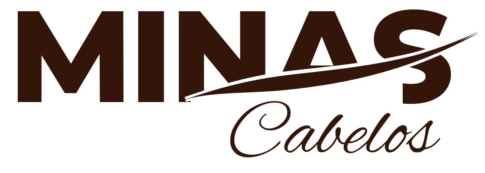
minas-cabelos-completa-mono-cafe · impressão em uma cor, carimbo, cópia em preto e branco, papel kraft.
minas-cabelos-completa-mono-branca · sobre foto movimentada, vídeo, adesivo de vitrine, sacola colorida.minas-cabelos-completa-ouro-chapado · hot stamping (dourado a quente), bordado, gravação em caixa e etiqueta de tecido.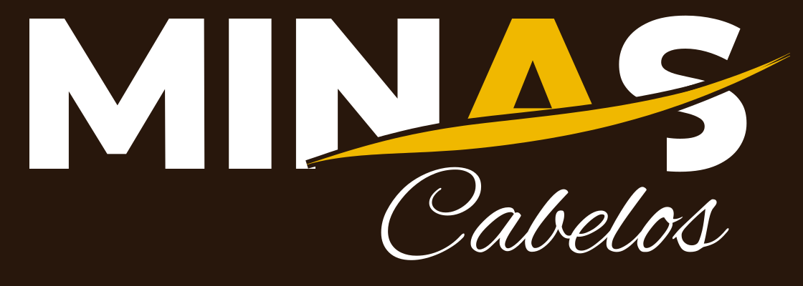
minas-cabelos-completa-fundo-cafe · quando a ferramenta não deixa trocar o fundo: capa de destaque, faixa de marketplace, assinatura de terceiros.| Fundo | Versão | Por quê |
|---|---|---|
| Café, Torra, Painel | Completa branca com ouro | O branco lê 17:1 e o ouro 9,5:1. É a combinação dos posts atuais. |
| Leite, Creme, branco | Completa café com ouro | O café lê 15,6:1. O ouro do A e da mecha entra como cor da marca, não como texto. |
| Vinho | Completa branca com ouro | Ouro 5,6:1 e branco 10,3:1 sobre o vinho. |
| Foto escura | Completa branca, com sombra de leitura (Torra subindo da base) | Nunca caixa colorida atrás da marca. |
| Foto clara ou movimentada | Uma cor branca sobre a sombra, ou mudar a foto | A marca não disputa com fio solto atrás dela. |
| Ouro, Mel, Dourado, Cobre, Mata | Nenhuma | A marca não vai sobre a cartela nem sobre o ouro. A cartela é borda, não fundo. |
Reduzida, símbolo e avatar
Quando a marca fica pequena, "Cabelos" vira um risco ilegível. Por isso existem duas versões menores, que tiram partes do logotipo em vez de encolher tudo.
minas-cabelos-reduzida-* (1120 × 250).
minas-cabelos-simbolo-* (600 × 600).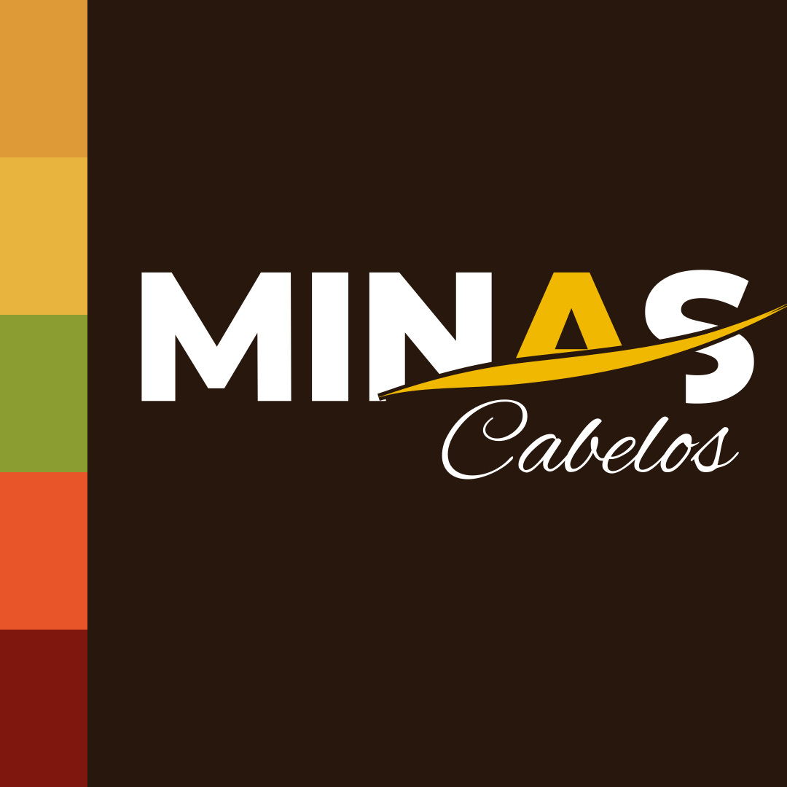
minas-cabelos-avatar (1080).Respiro e tamanho mínimo
O respiro é 0,5 M: metade da altura das letras de MINAS, em volta de toda a marca. Dentro dessa faixa não entra texto, foto recortada, ícone nem a borda da peça.
| Versão | Tela | Impresso | Peça 1080 |
|---|---|---|---|
| Completa | 160 px | 35 mm | 420 u (capa: 560 a 620 u) |
| Reduzida | 96 px | 22 mm | 300 u (rodapé) |
| Símbolo | 24 px | 6 mm | 88 a 110 u |
| Avatar | 40 px | não se aplica | arquivo inteiro |
Na peça de 1080 px, a marca completa aparece na capa e na última lâmina, com pelo menos 420 u de largura. No miolo do carrossel, a reduzida no rodapé ou nada.
Marca completa de 200 u no canto do post: no celular ela fica com 70 px e "Cabelos" vira um borrão. Abaixo do mínimo, troque de versão em vez de encolher.
Onde a marca fica na peça
A cartela ocupa a borda esquerda. A marca nunca encosta nela: começa depois da margem de 72 u, alinhada ao texto.
Capa com a marca
Lave o mega hair com água morna, nunca quente.
 02/05
02/05Tic tac de cabelo humano
O que nunca se faz com a marca
Todos esses erros já aparecem em lojas do setor. Cada um deixa a marca com cara de improviso.
Café de fundo, ouro de marca, cinco tons de cartela
As cores da Minas foram medidas nos arquivos que a própria loja publicou: o café dos posts, o café e o ouro do logotipo, as cinco faixas do avatar, o creme do cartão de informação. Nada foi inventado; o sistema só organiza o que já estava lá e diz onde cada cor entra.
As cores da marca
Café é o campo principal: abre posts, stories, capas e o topo do site. Creme e Leite são os campos de leitura. O Ouro é da marca e não vira fundo.
Café
- HEX
- #28170C
- RGB
- 40 23 12
- CMYK
- 40 70 80 75
- Token
- --cafe
Fundo dos posts, stories, capas, topo do site e fachada. Medido nos posts de 2026.
Café Minas
- HEX
- #33150A
- RGB
- 51 21 10
- CMYK
- 35 80 85 65
- Token
- --cafe-marca
As letras do logotipo. Todo título e texto sobre Leite, Creme e branco.
Ouro Minas
- HEX
- #F0B800
- RGB
- 240 184 0
- CMYK
- 0 25 100 0
- Token
- --ouro
O A e a mecha do logotipo. Botão, rótulo, número e palavra à mão sobre Café. Nunca texto no claro.
Creme
- HEX
- #F1E4D1
- RGB
- 241 228 209
- CMYK
- 4 10 18 0
- Token
- --creme
O cartão de informação dos posts, o miolo do carrossel, etiqueta e sacola. Também texto sobre Café.
Leite
- HEX
- #FBF6EE
- RGB
- 251 246 238
- CMYK
- 1 3 6 0
- Token
- --leite
Fundo de documento, catálogo, site e páginas longas. Mais quente que o branco puro.
A cartela: cinco tons, sempre na mesma ordem
As cinco faixas do avatar e dos posts viram a assinatura da casa. Elas lembram a cartela de mechas do balcão e cada uma ganhou um nome de cabelo ou de Minas.
Mel
- HEX
- #DD9A37
- CMYK
- 5 40 85 0
Dourado
- HEX
- #E9B43E
- CMYK
- 5 28 85 0
Mata
- HEX
- #8B9D30
- CMYK
- 45 20 100 10
Cobre
- HEX
- #E85529
- CMYK
- 0 78 90 0
Vinho
- HEX
- #80170F
- CMYK
- 25 100 100 35
- Ordem fixa. De cima para baixo (ou da esquerda para a direita): Mel, Dourado, Mata, Cobre, Vinho. Faixas de mesma altura, sem espaço entre elas.
- Lugar fixo. Na borda esquerda da peça, de cima a baixo, com 56 u de largura no post (28 u no story). No site, 10 px na borda da página. Na régua horizontal, só como divisor ou rodapé.
- Só como faixa. A cartela não vira fundo, letra, ícone colorido nem gráfico de cinco cores. Cada tom sozinho não sai da cartela, com uma exceção: o Vinho, que é a cor de destaque no claro.
- Inteira ou nada. Nunca três ou quatro faixas, nunca outra ordem, nunca cores trocadas por campanha.
As cores de apoio
Criadas para o sistema funcionar em texto, painel e rodapé. Não aparecem sozinhas como cor de campanha.
| Nome | HEX | Token | Uso |
|---|---|---|---|
| Torra | #1B0F07 | --torra | Rodapé, fundo mais profundo, sombra de leitura sobre foto. |
| Painel | #3A2316 | --painel | Cartão sobre Café (dados do produto, preço, aviso). |
| Canela | #C9A98A | --canela | Texto de apoio, legenda e rótulo sobre Café (7,8:1). |
| Tabaco | #6B4A36 | --tabaco | Texto de apoio, legenda e rótulo sobre Leite e Creme (7,3:1). |
| Bronze | #8A5A00 | --bronze | O dourado quando precisa ser texto no claro (5,5:1). Uso raro. |
| Areia | #E6D5BC | --areia | Linha de 1 px e painel no claro. |
| Erro e certo | #B42318 · #3F6B1E | --erro · --ok | Formulário e aviso, sempre com texto e ícone, nunca só a cor. |
Pares de leitura
Contraste medido pela regra internacional de acessibilidade (WCAG): texto comum precisa de pelo menos 4,5 para 1; texto grande (24 px ou mais), de 3 para 1.
Pares proibidos
O orçamento de cor
Quanto cada cor ocupa no conjunto das peças do mês. É isso que faz o perfil parecer uma loja só, e não uma colagem de artes de fornecedores diferentes.
O que sai da paleta
Ouro chapado no botão, no número e no rótulo. Café chapado no fundo. A cartela inteira, na borda. Foto com o tom fiel do cabelo.
O laranja #FF4E00 e o roxo #833CA3 do tema do site de 2023; o degradê dourado com brilho do botão "Aplicar agora"; fundo rosa, lilás ou neon de modelos prontos do Canva; ouro metálico simulado em texto.
CMYK aproximado, calculado a partir do HEX. A referência de impressão (CMYK final e Pantone) depende da prova de cor da gráfica (pendência 13).
Montserrat que firma, Nunito que acolhe
A tipografia repete a lógica do logotipo. Letra de bastão firme para o que precisa ser visto de longe, letra arredondada e calma para o que precisa ser lido, e uma única palavra escrita à mão para o que precisa ser sentido. As três são gratuitas, funcionam no Canva e no Google Fonts.
As fontes da casa
Montserrat
AÁÃBCÇDEÉÊ 0123456789
Pesos 800 (títulos), 700 (subtítulos e rótulos), 600 (botões pequenos). É a mesma família da reconstrução de MINAS: título e marca falam a mesma língua.
Nunito Sans
aáãbcçdeéê 0123456789
Pesos 400 (texto), 600 (ênfase) e 700 (dado e preço). Cantos levemente arredondados, boa leitura no celular, acentos claros.
Alex Brush
você confiança natural
Uma palavra por título, nunca frase. É a cursiva mais próxima do "Cabelos" do logotipo.
<link href="https://fonts.googleapis.com/css2?family=Montserrat:wght@600;700;800&family=Nunito+Sans:opsz,wght@6..12,400;6..12,600;6..12,700&family=Alex+Brush&display=swap" rel="stylesheet">
No brand book e nos arquivos da skill as fontes vêm de assets/fontes/, sem depender da internet.
A palavra à mão
É a assinatura da casa na escrita. Em cada título, a palavra que carrega o sentimento sai em Alex Brush, cerca de 1,3 vez maior que o título, em ouro no Café e em vinho no claro. No código, é o <em> do título.
Cabelo humano que combina com você
Beleza que gera confiança
| Qual palavra escolher | Exemplo |
|---|---|
| A pessoa | Combina com você · Do seu jeito |
| O sentimento | Beleza que gera confiança · Mais leveza no dia a dia |
| A qualidade que se vê | Caimento natural · Brilho de cabelo cuidado |
| O lugar | Feito em Minas · A loja de Três Corações |
Uma palavra, no fim ou no meio do título, com significado. "Tic tac de cabelo humano". Mínimo de 40 u na peça e 32 px na tela.
Frase inteira em cursiva, duas palavras à mão no mesmo título, cursiva em caixa alta, em botão, em preço, em texto pequeno ou em lista. Também não vale trocar Alex Brush por outra cursiva do Canva.
Caixa alta só no que é curto
Os posts da loja já usam títulos em caixa alta, como MINAS. O sistema mantém isso nas peças, com limite.
Peça: título em caixa alta com até seis palavras ("PERUCAS PRONTAS PARA USAR"). Rótulos em caixa alta pequena com espaçamento largo ("MEGA HAIR · PERUCAS · LACES").
Parágrafo, legenda, mensagem de WhatsApp ou título de documento inteiro em caixa alta. Lê-se como grito e cansa no celular.
As escalas
Duas escalas: uma para documento e site (tela), outra para a peça de 1080 px. Na peça, nenhum texto fica abaixo de 26 px, porque o post aparece a cerca de 36% do tamanho no celular.
| Nível | Fonte | Tamanho |
|---|---|---|
| Display | Montserrat 800 | 104 / 48 px |
| Título de seção | Montserrat 800 | 58 / 34 px |
| Subtítulo | Montserrat 700 | 34 / 24 px |
| Intertítulo | Montserrat 700 | 24 / 20 px |
| Chamada | Nunito Sans 400 | 21 / 18 px |
| Texto | Nunito Sans 400 | 17 / 16 px, entrelinha 1,68 |
| Apoio e legenda | Nunito Sans 400 | 15 e 13 px |
| Rótulo | Montserrat 700, caixa alta | 12 px, +0,18 em |
| Nível | Fonte | Tamanho |
|---|---|---|
| Título | Montserrat 800, caixa alta | 84 a 100 u, até 3 linhas |
| Palavra à mão | Alex Brush | 1,35 × o título |
| Subtítulo | Montserrat 700 | 48 u |
| Corpo | Nunito Sans 400 | 32 a 36 u |
| Preço | Montserrat 800 | 64 u |
| Rótulo, legenda, @ | Montserrat 700 ou Nunito | 26 u (piso absoluto) |
| Margem | 72 u; 128 u à esquerda por causa da cartela | |
No Canva, no CapCut e no celular
| Ferramenta | Montserrat | Nunito Sans | Alex Brush |
|---|---|---|---|
| Canva | Disponível (Montserrat ExtraBold e Bold) | Disponível | Disponível com o nome "Alex Brush"; conferir na lista de fontes da conta |
| CapCut | Disponível na maioria das versões | Pode faltar: use Nunito | Pode faltar: suba o arquivo de assets/fontes/ |
| Word e Google Docs | Google Docs: sim. Word: instalar | Google Docs: sim. Word: instalar | Google Docs: sim |
| Se faltar | Arial Black (título) | Arial (texto) | Tirar a palavra à mão: nunca trocar por outra cursiva |
Cinco leis da casa
Tudo o que vem antes (marca, cor, letra) e tudo o que vem depois (peças, mensagens, loja) cabe nestas cinco leis. Quando aparecer uma situação que o manual não previu, a resposta está numa delas. Quem cria para a Minas, seja a equipe, uma agência ou uma inteligência artificial, começa por aqui.
A cartela abre, a mecha assina
Toda peça tem a cartela na borda e, no máximo, uma mecha. O ouro é da marca: até 5% da área e nunca texto sobre fundo claro.
Front lace de cabelo humano
Front lace de cabelo humano
À esquerda, a peça da casa: Café, cartela na borda, ouro só na palavra à mão e no A da marca. À direita, o erro mais comum: fundo em degradê com as cores da cartela, ouro ocupando a peça inteira, sombra no texto e marca completa pequena demais.
- A cartela tem lugar: borda esquerda, de cima a baixo.
- A mecha aparece uma vez: divisor, sublinhado ou assinatura.
- No claro, o destaque é Vinho. O ouro fica só dentro do logotipo.
Uma palavra à mão por título
A palavra que carrega o sentimento vai em letra cursiva. Se tudo é à mão, nada é.
Perucas prontas para você
Uma palavra, no fim, com sentido. O resto firme, em Montserrat.
Perucas Prontas Para Você Arrasar
Frase inteira em cursiva: fica bonita de longe e ilegível no celular.
Cabelo de verdade, cor de verdade
Só foto real do produto e de clientes que autorizaram por escrito. Nada de filtro que mude o tom, banco de imagem ou pessoa gerada por IA: a cliente compra a cor que vê.
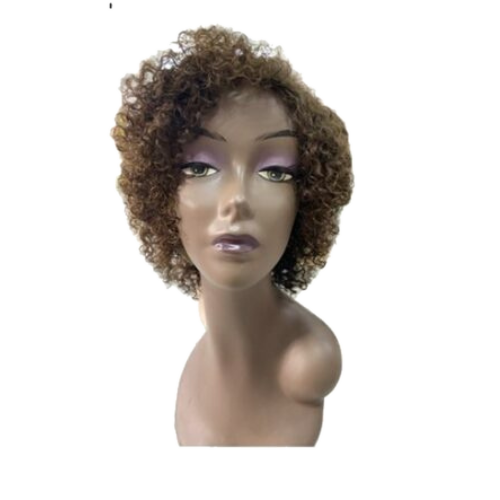
O que é humano é humano
Cada produto com o nome certo do material (cabelo humano, orgânico, bio fibra, fibra para tranças), o comprimento em centímetros e o peso em gramas. Origem e qualidade só com documento do fornecedor.
Peruca Naty
- Material
- Fibra orgânica (sintética que imita o humano)
- Comprimento
- [cm] cm
- Textura
- Ondulada
- Tom
- Castanho escuro
- Calor
- Conferir com o fornecedor
R$ [valor]Preço à vista. Parcelamento informado com número de parcelas e total.
"Peruca de fibra orgânica, 60 cm, caimento natural."
"Peruca orgânica igual a cabelo humano", "100% humano" sem documento, "virgem" ou "Remy" (cabelo com as cutículas alinhadas) sem nota do fornecedor.
Acolher antes de vender
Sem pressão, sem urgência falsa, sem explorar insegurança. Preço claro quando aparece, troca explicada antes da compra.
"Quer que eu te mande fotos do tom 4 ao lado de um castanho natural? Assim você compara com calma antes de decidir."
"Últimas unidades, só hoje!" (sem ser verdade), "Cansada do cabelo ralo?", "Chega de ser invisível". Medo e vergonha não vendem cabelo: afastam a cliente e são barrados nos anúncios.
Uma loja, muitas linhas
A Minas Cabelos vende mais de dez tipos de produto e faz serviços de confecção sob medida. Para a cliente não se perder, tudo fica debaixo de uma marca só, organizado em quatro famílias. Nenhuma linha ganha logotipo próprio: o nome da linha é escrito em texto, com a marca da casa ao lado.
Marca-mãe e famílias
Uma marca, quatro famílias de produto, um serviço e dois tipos de gente que falam pela loja.
Mega hair
Cabelo para alongar e dar volume: cápsula de queratina, fita adesiva (Invisible Hair), tic tac e rabo de cavalo.
Perucas e laces
Perucas (wigs) humanas e orgânicas, front lace, top closure e próteses capilares masculinas e femininas.
Tranças
Jumbos e fibras para tranças, para trancistas e para quem trança em casa.
Cuidados e acessórios
Pomadas, colas, removedores, toucas e acessórios de aplicação e manutenção.
As linhas de produto, com o nome certo
É a base do catálogo, do site, das etiquetas e das respostas no WhatsApp. O nome da coluna "Como chamar" é o único usado em peça pública.
| Como chamar | Família | Material | Para quem / para quê | Dados obrigatórios na peça |
|---|---|---|---|---|
| Mega hair em queratina | Mega hair | Cabelo humano em cápsulas | Alongamento duradouro, aplicado por profissional | Comprimento (cm), peso (g), tom, textura |
| Fita adesiva (Invisible Hair) | Mega hair | Cabelo humano em fita | Alongamento discreto, aplicação rápida | Comprimento, peso, número de fitas, tom |
| Tic tac | Mega hair | Cabelo humano em tela com presilhas | Volume e comprimento que se tira e põe em casa | Peças no kit, comprimento, peso, tom |
| Rabo de cavalo | Mega hair | Cabelo humano ou bio fibra | Penteado pronto, ocasião especial | Material, comprimento, peso, tom |
| Peruca de cabelo humano | Perucas e laces | Cabelo humano | Troca de visual completa, aceita calor e química | Modelo, comprimento, tom, tipo de touca |
| Peruca orgânica | Perucas e laces | Fibra orgânica (sintética) | Visual pronto com preço menor | Modelo, comprimento, tom, cuidado com calor |
| Front lace e top closure | Perucas e laces | Cabelo humano, orgânico ou bio fibra em tela | Risca e contorno naturais na testa | Material, tamanho da tela, comprimento, tom |
| Prótese capilar | Perucas e laces | Cabelo humano em base | Homens e mulheres que querem cobrir uma área da cabeça | Tamanho da base, material, tom, cuidado |
| Jumbo para tranças | Tranças | Fibra para tranças | Trancistas e box braids | Cor, comprimento, peso do pacote |
| Bio fibra | Mega hair · Perucas | Fibra sintética de toque natural | Rabos de cavalo e laces de preço acessível | Comprimento, peso, tom |
| Cuidados e acessórios | Cuidados | Cosméticos e utensílios | Manutenção do mega hair e da peruca | Marca, conteúdo, registro conferido (pendência 17) |
As perucas têm nome de mulher
A loja já batiza cada modelo de peruca com um nome (Bianca, Luiza, Vitória, Naty). O sistema mantém: o nome ajuda a cliente a pedir pelo WhatsApp sem confusão. Regra: "Peruca + material + nome".
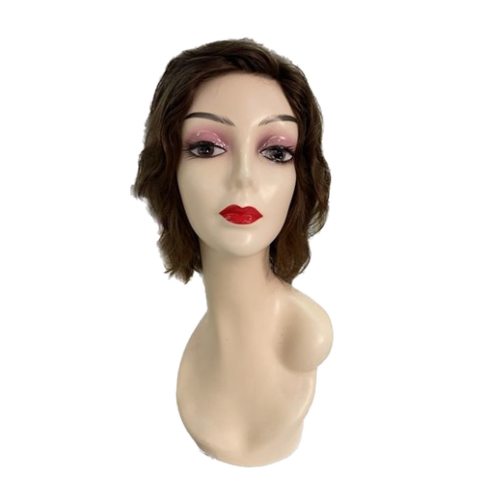
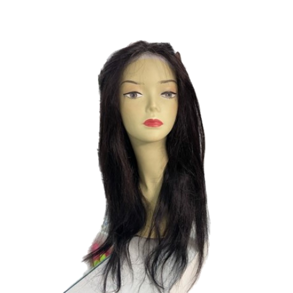
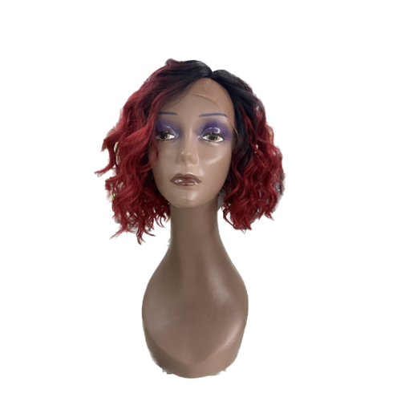
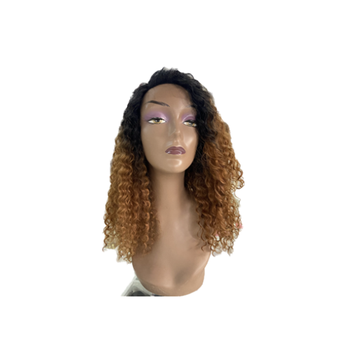
Fotos reais publicadas no site da loja. A correspondência entre foto e nome do modelo deve ser conferida pela loja antes de ir para o catálogo novo.
Quem fala pela loja
| Quem | Papel | Como assina |
|---|---|---|
| Minas Cabelos (@minascabelos) | A loja: produto, novidade, cuidado, atendimento, vagas | Marca da casa; avatar oficial |
| Régis, o dono | O rosto da loja: escolhe o cabelo, confecciona, explica o produto nos vídeos e no balcão | "Régis, da Minas Cabelos". Aparece em vídeo e foto real; não ganha marca pessoal separada |
| Equipe da loja | Atender no balcão e no WhatsApp, separar pedidos | Primeiro nome + "da Minas Cabelos". Nunca se apresenta como cabeleireira se não for |
| Embaixadoras | Clientes e profissionais que usam e indicam a loja | Perfil próprio, com publicidade identificada (seção 19 e pendência 9) |
| Parceiras que aplicam | Salões e profissionais que aplicam o mega hair comprado na loja | Nome do salão em texto; a Minas não assina o serviço de outra pessoa (pendência 14) |
"Régis, da Minas Cabelos, mostra como escolher o tom do tic tac."
Criar outro logotipo para a confecção, para as embaixadoras ou para o perfil do Régis. Cada logotipo novo divide a lembrança da marca que a loja levou anos para construir.
Os destaques do Instagram, reorganizados
Hoje são catorze destaques, alguns repetidos ("Cabelo Humano" e "Cabelos Humanos", "Depoimentos" e "Depoimentos 2"). A proposta junta tudo em oito, na ordem em que a cliente decide.
| Ordem | Destaque novo | Junta os atuais |
|---|---|---|
| 1 | Comece aqui | (novo) Quem somos, como comprar, envio, troca |
| 2 | Mega hair | Cabelo Humano, Cabelos Humanos, Tic tacs |
| 3 | Perucas | Perucas, Wig Natural |
| 4 | Laces | Lace Orgânica, Lace Natural |
| 5 | Rabos e tranças | Rabo de Cavalo, jumbos |
| 6 | Confecção | Confecções |
| 7 | Clientes | Clientes, Depoimentos, Depoimentos 2 (só com autorização, pendências 8 e 11) |
| 8 | Embaixadoras | Embaixadoras |
As capas dos destaques seguem a seção 14: símbolo ou ícone fino em ouro sobre Café, sem foto. O destaque "Cherey 450gr." vira um post fixado ou entra em "Mega hair".
Falar como quem atende no balcão
A voz da Minas é a de quem está do outro lado do balcão com a cartela na mão: explica sem pressa, pergunta antes de indicar, fala de centímetro e de grama com a mesma naturalidade com que fala de autoestima. É mineira no ritmo, não no sotaque escrito.
Os cinco traços da voz
| Traço | Quer dizer | Soa assim |
|---|---|---|
| Acolhedora | Recebe antes de vender; trata pelo nome; responde a dúvida que veio | "Oi, [nome], que bom te ver por aqui. Me conta o que você está procurando." |
| Caprichada | Detalhe de quem entende do produto: tom, textura, cm, g | "Esse tic tac tem [peças] peças, [cm] cm e [g] g. Dá volume sem pesar." |
| Honesta | Fala do material sem enfeitar; diz quando não serve | "Para usar chapinha todo dia, o orgânico não é o melhor. Te mostro o humano." |
| Vaidosa | Gosta de beleza e não tem vergonha disso | "Ficou lindo com o iluminado. Esse caimento é tudo." |
| Mineira | Calma, próxima, palavra cumprida, sem exagero | "Pode vir tomar um café e experimentar com calma." |
Diga e nunca diga
- "Você", sempre. "A gente" para a loja.
- O nome certo do material e as medidas.
- "Combina com você", "fica natural", "caimento", "brilho", "leveza", "do seu jeito".
- "Vamos ver juntas qual fica melhor."
- "Beleza que gera confiança."
- Preço com condição explicada.
- "Imperdível", "promoção relâmpago" sem prazo real, "últimas unidades" sem ser verdade.
- "Igual a cabelo humano" para fibra; "100% virgem" sem documento.
- "Cansada do cabelo ralo?", "acabe com a vergonha", "fique apresentável".
- "Trata a queda", "cura a calvície".
- "Amiga", "miga", "diva", "rainha" em excesso; caixa alta gritando.
- Emoji em fila (três ou mais seguidos).
Glossário da loja
Na primeira vez que um termo técnico aparece numa peça ou mensagem, ele vem explicado em palavras simples. O glossário é a fonte dessas explicações.
| Termo | Explicação para a cliente |
|---|---|
| Mega hair | Cabelo aplicado junto ao seu para ganhar comprimento ou volume. |
| Cabelo humano | Fio de cabelo de verdade: aceita chapinha, babyliss e coloração. |
| Cabelo orgânico | Fibra sintética de alta qualidade que imita o cabelo humano. Mais leve no preço; cuidado com calor. |
| Bio fibra | Fibra sintética de toque macio, usada em rabos de cavalo e laces. |
| Tic tac | Tela com presilhas: você coloca e tira em casa, sem aplicação. |
| Fita adesiva (Invisible Hair) | Mechas presas por fitas finas, quase invisíveis, aplicadas por profissional. |
| Queratina | Mega hair em cápsulas coladas com calor perto da raiz, mecha por mecha. |
| Lace (front lace) | Tela fina na frente da peruca que imita a linha da testa e a risca. |
| Closure (top closure) | Pedaço de tela só no topo da cabeça, para a risca ficar natural. |
| Wig | Peruca, em inglês. Na Minas, escreva "peruca" e use "wig" só em hashtag. |
| Prótese capilar | Base fina com cabelo que cobre uma área da cabeça; fixada por profissional. |
| Jumbo | Fibra para tranças, vendida em pacote. |
| Gramatura (peso) | Quanto cabelo vem: mais gramas, mais volume. |
| Tom | A cor do fio, em número ou nome (castanho, loiro, iluminado, ombré). |
O tom em cada situação
A voz é a mesma; o tom muda com quem está do outro lado.
Seja bem-vinda à Minas. Fica à vontade para tocar nos cabelos. Me conta: você quer mais comprimento, mais volume ou mudar o visual? Aí eu separo três opções para você comparar no espelho.
Oi, [nome]. Aqui é da Minas Cabelos, em Três Corações. Que bom falar com você. Para eu te indicar o cabelo certo, me manda uma foto do seu cabelo com luz do dia e me diz o comprimento que você quer.
Oi, [nome]. Passando para saber como ficou o seu [produto]. Se surgir qualquer dúvida para lavar, pentear ou guardar, me chama aqui. E se quiser, manda uma foto: a gente adora ver.
É normal ficar em dúvida, viu. Muita cliente chega assim. Vamos fazer com calma: te mando fotos do tom ao lado de um cabelo natural e, se quiser, você vem experimentar antes de decidir.
Obrigada por confiar na gente. Você pode vir num horário mais tranquilo, e o atendimento é reservado. Vamos escolher juntas uma peça confortável, que fique do jeito que você gosta. Não precisa contar nada além do que quiser.
Oi, [nome]. Chegou jumbo nas cores [cores], pacotes de [g] g. Quer que eu separe a quantidade de sempre? Para profissional, a gente monta o pedido e você retira ou recebe em [cidade].
Pontuação, emoji e legenda
Travessão: zero
Use ponto, vírgula ou dois pontos. Frase curta lê melhor no celular.
Exclamação: uma
No máximo uma por peça ou mensagem. Entusiasmo vem da escolha da palavra.
Emoji: só no texto
Nunca na arte. Na legenda e no WhatsApp, até dois, nunca em fila: ✨ e 🤎 são os da casa.
Tic tac de cabelo humano, kit com 2 peças ✨ São [cm] cm e [g] g, no tom castanho natural. Você coloca e tira em casa, sem aplicação, e pode usar chapinha e babyliss. Quer ver o tom ao lado do seu cabelo? Chama a gente no WhatsApp (link na bio) ou vem tomar um café na loja, em Três Corações. #megahair #tictac #cabelohumano #trescoracoes
Vender com a verdade do fio
Cabelo é compra de confiança: a cliente paga caro, muitas vezes sem ver a peça de perto, e vai usar no próprio corpo. Por isso a Minas mostra preço, material, troca e prazo antes de a cliente perguntar. Esta seção junta as regras do Código de Defesa do Consumidor, do comércio eletrônico, da publicidade e das plataformas de anúncio, sempre na leitura mais cuidadosa.
As regras que valem para toda peça
Conferidas em setembro de 2026. Elas não substituem a orientação de um contador ou advogado da loja, mas são o mínimo para qualquer post, anúncio, catálogo ou página.
| Norma | O que diz | Como aparece na Minas |
|---|---|---|
| Código de Defesa do Consumidor (Lei 8.078/1990), art. 6º, III, e art. 31 | A informação sobre o produto tem que ser clara, correta e em português: características, composição, preço, garantia e prazos. | Toda ficha diz o material, o comprimento em centímetros, o peso em gramas, a cor e o preço. |
| CDC, art. 37 | Proíbe publicidade enganosa (que induz a erro, inclusive por omissão) e abusiva (que explora medo, insegurança ou falta de experiência). | Nada de chamar fibra de cabelo humano, nem de usar a insegurança da cliente como gancho. |
| CDC, art. 49 | Na compra feita fora da loja (WhatsApp, site, Instagram), a cliente pode desistir em até 7 dias depois de receber, com devolução do valor. | A política de troca explica o arrependimento antes da compra (pendência 5). |
| CDC, art. 26 | Prazo para reclamar de defeito aparente: 30 dias para produto não durável e 90 dias para durável. | O cartão de cuidados e a página de troca informam o prazo e o canal para reclamar. |
| Decreto 7.962/2013 (comércio eletrônico) | O site mostra nome empresarial, CNPJ, endereço, resumo do contrato, formas de pagamento, prazo de entrega e canal de atendimento. | Rodapé do site e página "Como comprar" (pendências 3 e 16). |
| Lei 10.962/2004 e Decreto 5.903/2006 | Preço à vista em destaque; no parcelado, número de parcelas, valor de cada uma, juros e total. | "R$ [valor] à vista ou 3 × R$ [valor] sem juros (total R$ [valor])". |
| Lei 13.455/2017 | Permite preço diferente por forma de pagamento (Pix, cartão), desde que informado. | Se o Pix tem desconto, a peça diz o preço no Pix e o preço no cartão. |
| Código do CONAR e Guia de Publicidade por Influenciadores Digitais (CONAR, 2021) | Publicidade tem que ser identificada como tal, inclusive quando quem fala recebeu produto ou desconto. | Embaixadoras marcam #publi ou "parceria paga com @minascabelos" (seção 19). |
| LGPD (Lei 13.709/2018) e Código Civil, art. 20 | Foto e vídeo de cliente são dado pessoal e direito de imagem: só com autorização, para a finalidade combinada, com retirada quando pedida. | Termo de autorização por escrito antes de postar qualquer cliente (pendência 8). |
| Políticas de anúncio da Meta | Proíbem texto que presume característica pessoal do leitor e imagem que sugere visão negativa do próprio corpo. | Anúncio fala do produto e do resultado visível, nunca do "problema" de quem lê (08.5). |
Como mostrar preço, parcelamento e frete
Preço escondido ("chama no direct") afasta quem compra de longe e não é transparência. A regra da casa: se a peça fala de um produto específico, o preço aparece ou a peça diz onde ver.
Mega hair em cabelo humano · liso · 60 cm
- Peso
- 100 g
- Tom
- Castanho médio
- Aplicação
- Fita adesiva
R$ [valor] no Pixou 3 × R$ [valor] sem juros no cartão (total R$ [valor]). Frete calculado pelo CEP. Dado ilustrativo.
- Preço à vista primeiro, em Montserrat 800, maior que o parcelado.
- Parcelado completo: número de parcelas, valor da parcela, juros (ou "sem juros") e total.
- Frete: "calculado pelo CEP" ou o valor exato. Frete grátis só com a condição escrita do lado ("acima de R$ [valor], para [região]").
- Desconto: o preço de antes só aparece se foi praticado de verdade. "De R$ 900 por R$ 700" inventado é publicidade enganosa.
- Preço desatualizado não fica no ar: o site ainda mostra a tabela de 2023 (pendência 6). Até a revisão, use "consulte o preço atualizado pelo WhatsApp" na ficha.
"R$ [valor] no Pix ou 3 × R$ [valor] sem juros (total R$ [valor]). Frete pelo CEP."
"Valor no direct 😉", "Só hoje!", "Últimas unidades" sem ser verdade, parcela sem o total, "a partir de" sem dizer de qual tamanho.
Troca, devolução e higiene, explicadas antes
Cabelo tem regra de higiene: depois de aplicado, cortado ou lavado, a peça não volta para a vitrine. Isso precisa estar escrito antes da compra, e nunca pode apagar o direito de arrependimento nem a garantia contra defeito. O texto final depende da política da loja (pendência 5).
| Situação | O que a lei garante | Como a Minas comunica |
|---|---|---|
| Comprou pelo WhatsApp ou site e desistiu | 7 dias depois de receber, com devolução do valor (CDC, art. 49). | "Desistiu? Você tem 7 dias depois de receber. A peça precisa voltar sem uso, na embalagem lacrada." |
| Defeito (fio soltando, cor diferente da combinada) | Reclamação em 30 ou 90 dias e conserto, troca ou devolução (CDC, arts. 18 e 26). | "Notou um defeito? Fale com a gente pelo WhatsApp oficial com fotos e o número do pedido." |
| Peça já aplicada, cortada ou lavada | Sem defeito, a loja pode não aceitar troca por higiene, se avisou antes. | "Por higiene, peças aplicadas, cortadas ou lavadas não são trocadas, exceto por defeito." |
| Peça sob medida (confecção com o cabelo da cliente) | Combinado por escrito antes do serviço: prazo, medidas e o que acontece se não servir. | Ficha de confecção assinada pelo WhatsApp, com foto da medida e do cabelo entregue. |
O nome certo do material (lei IV)
A confusão mais cara do setor é vender fibra como cabelo humano. Na Minas, o nome do material vem antes do nome do modelo, sempre.
| Material | O que é | Pode dizer | Não pode dizer |
|---|---|---|---|
| Cabelo humano | Fio humano, aceita calor, tintura e escova como o natural. | "Cabelo humano", "aceita química" (se o fornecedor confirma). | "Virgem", "Remy", "brasileiro", "100% humano" sem documento do fornecedor (pendência 7). |
| Cabelo orgânico | Fibra que imita o cabelo humano, com aparência natural e preço menor. | "Orgânico, fibra de aparência natural", "aceita chapinha até [°C]" se o fabricante informa. | "Igual ao humano", "natural" sozinho, "cabelo de verdade". |
| Bio fibra | Fibra sintética de alta resistência, usada em rabos de cavalo, laces e mega hair. | "Bio fibra", com comprimento e peso. | "Fibra humana", "bio cabelo". |
| Jumbo | Fibra para tranças (box braids, nagô, twist). | "Jumbo para tranças", cor pelo código do fabricante. | "Cabelo para trança" sem dizer que é fibra. |
| Prótese capilar | Base fina com fios implantados, colada ou presa, que cobre uma área da cabeça. | "Prótese capilar masculina ou feminina", "cobre a área do topo". | "Tratamento", "recupera o cabelo", "acaba com a calvície". |
Anúncio que a Meta aprova (e que respeita a cliente)
As plataformas reprovam anúncio que fala da característica pessoal de quem lê ou que sugere que o corpo da pessoa é um problema. O robô também lê a página para onde o anúncio leva: a regra vale para o site e o catálogo.
| Assunto | Proibida (reprova ou machuca) | Permitida (no tom da casa) |
|---|---|---|
| Volume | "Seu cabelo está ralo?" | "Mais volume em uma tarde, com fita adesiva em cabelo humano." |
| Queda | "Você está ficando careca?" | "Prótese capilar sob medida, feita na nossa loja em Três Corações." |
| Autoestima | "Pare de ter vergonha do seu cabelo." | "Cabelo que combina com você. Venha escolher o tom com a gente." |
| Resultado | "Fica perfeito em qualquer pessoa, garantido." | "Cada cabelo é escolhido junto com você: textura, tom e comprimento." |
| Urgência | "Só hoje! Últimas peças!" (sem ser verdade) | "Chegaram 6 peças de 70 cm no tom mel. Reserve pelo WhatsApp." |
| Antes e depois | Foto "antes" com legenda de tristeza ou defeito. | A transformação mostrada como processo, com autorização, sem julgar o "antes" (seção 09). |
Peruca e prótese para quem passa por tratamento
Parte das clientes procura a Minas durante uma quimioterapia ou por causa de uma alopecia (queda de cabelo por doença). Esse atendimento pede o maior cuidado do manual (pendência 15).
Avisos prontos para copiar
Os textos ficam no rodapé do site, no fim do catálogo e na legenda quando couber. Os dados entre colchetes dependem das pendências 3 a 6.
Minas Cabelos · [razão social] · CNPJ [nº] · [endereço completo], Três Corações (MG) · Atendimento: [dias e horário] · WhatsApp oficial (35) [confirmar]. Preços válidos para [data]. Imagens dos produtos reais da loja; o tom pode variar conforme a tela. Compras fora da loja podem ser canceladas em até 7 dias depois do recebimento (CDC, art. 49). Por higiene, peças aplicadas, cortadas ou lavadas só são trocadas em caso de defeito.
[Material] · [textura] · [comprimento] cm · [peso] g · tom [nome do tom] R$ [valor] no Pix ou [n] × R$ [valor] sem juros (total R$ [valor]). Enviamos para todo o Brasil. Peça o seu pelo WhatsApp oficial (link na bio). A cor da foto foi feita em luz natural, sem filtro.
O cabelo na luz de verdade
Na Minas, a foto é a vitrine de quem compra de longe. Se o mel parece dourado na tela e chega acobreado em casa, a cliente perdeu a confiança e a loja perdeu a venda seguinte. Por isso a regra é simples: luz natural, fundo neutro, uma referência de cor e nenhum filtro que mude o tom.
O acervo que já existe
As fotos de produto do site (2023) são reais: perucas no manequim, recortadas, sobre fundo branco. Servem para catálogo, ficha e WhatsApp. O que falta é a sessão nova com luz natural, a loja e o Régis (pendência 10).
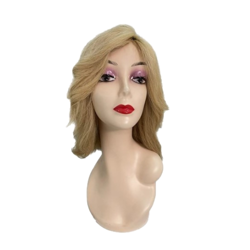
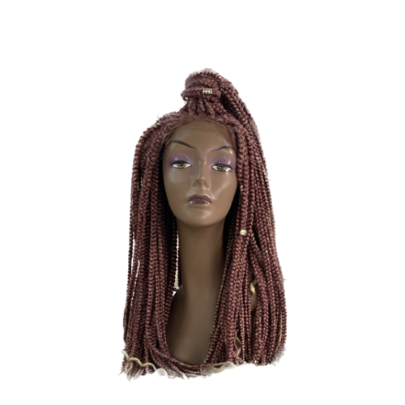
Exemplo de tratamento permitido: o fundo branco das fotos do site de 2023 foi recortado automaticamente, sem tocar na cor do cabelo (os originais ficam em assets/referencia-original/fotos-site-2023/). Por isso elas aparecem aqui sobre o creme da casa e funcionam em qualquer campo. Sobre o café, use o mesmo recorte com uma sombra de chão discreta, nunca contorno branco.
A receita da foto de produto
Dá para fazer com o celular, dentro da loja, em 10 minutos por peça.
| Item | Como | Por quê |
|---|---|---|
| Luz | Luz natural de janela, de lado, entre 9h e 15h, sem sol direto. Luz da loja apagada. | Lâmpada amarela ou LED colorido muda o tom do cabelo. |
| Fundo | Parede ou cartolina creme ou branca, lisa, sem estampa. Nada de fundo floral ou mármore. | O fundo neutro deixa o tom do fio aparecer como é. |
| Referência de cor | Na primeira foto de cada peça, a cartela de cor da loja (ou um cartão branco) ao lado do cabelo. | Prova que o tom não foi alterado e ajuda a cliente a comparar. |
| Enquadramento | Três fotos: peça inteira, detalhe da textura (palmo de distância) e comprimento com fita métrica. | Responde às três perguntas do WhatsApp: como é, como é o fio, quanto mede. |
| Celular | Câmera principal (1×), sem modo retrato, sem filtro, exposição travada tocando no cabelo. | O modo beleza e o modo retrato borram o fio e mudam a cor. |
| Formato | Vertical 4:5 para feed e catálogo; 9:16 para story e reels. | Já sai no tamanho das peças das seções 14 e 15. |
| Edição | Só recorte, reto (alinhar) e corrigir exposição. Saturação e temperatura de cor: não mexer. | Lei III: a cliente compra a cor que vê. |
A prancha de produto: inteira, textura, medida
Toda peça nova ganha a mesma prancha de três quadros. Ela vira o carrossel do Instagram, o álbum do catálogo do WhatsApp e a galeria do site.
Na prancha real, o quadro 2 é uma foto aproximada do fio e o 3 é a foto com a fita métrica. Aqui eles aparecem como esquema.
Manequim, mãos e cliente: quando usar cada um
Catálogo e ficha
Mostra a peça sem depender de autorização. Sempre o mesmo manequim por linha, maquiagem neutra se possível, ombros no quadro.
Processo e confecção
Mãos do Régis ou da equipe fazendo a tela de tic tac, colando a fita, separando a mecha. Mostra o capricho sem expor ninguém.
Só com termo assinado
Cabelo aplicado em cliente real é a prova mais forte, e só sai com autorização de imagem por escrito, para aquela finalidade (pendência 8). Sem termo, mostre só o cabelo, sem rosto.
Vídeo vertical: o fio em movimento
Os reels de maior procura da loja são de cabelo em movimento: mão passando pelo fio, a fita sendo aplicada, o tic tac abrindo e fechando. A mesma regra de luz vale para o vídeo.
- Abra no cabelo, não no logotipo: o primeiro segundo é o fio balançando na luz.
- Mostre a medida: fita métrica ou a mão segurando a ponta, com o comprimento escrito na tela ("60 cm · 100 g").
- Áudio: a voz do Régis explicando é melhor que música da moda. Se usar música, a da biblioteca liberada do Instagram.
- Texto na tela: Montserrat 700 branca com sombra de leitura, no máximo 6 palavras por vez, longe das bordas (zona segura na seção 14).
- Fecho: 1 segundo com o avatar da Minas ou o símbolo sobre café. Nada de vinheta longa.
O que nunca entra
Cada item abaixo quebra a lei III (cabelo de verdade, cor de verdade) ou a lei V (acolher antes de vender).
Transformação mostrada como processo: o cabelo da cliente antes de aplicar, as mãos aplicando e o resultado, com autorização e legenda neutra ("de 35 para 60 cm com fita adesiva em cabelo humano").
"Olha como ela estava sofrendo", foto de couro cabeludo de paciente, cliente sem saber que foi filmada, print de conversa com cliente.
Todas as formas vêm do fio
A ilustração da Minas não usa clipart de salão. Cada forma sai do próprio produto (o fio, a onda, o cacho, a trança, a medida) ou da marca (a mecha e a cartela). Todas são desenhadas pelo motor mcforms.js, em SVG, na cor do campo onde estão. Uma forma por peça, ao lado do texto, nunca atrás dele.
Como chamar uma forma
Basta um div com o nome da forma. As cores vêm do campo: ouro no café, vinho no claro. Para levar ao Canva, mcforms.svg('mecha', {campo:'cafe'}) devolve o desenho pronto para colar.
<div class="forma-svg" data-mcforms="mecha"></div>
<div class="forma-svg" data-mcforms='{"forma":"regua","de":30,"ate":80,"destaque":60}'></div>
<script src="mcforms.js"></script>
As duas formas da marca: mecha e cartela
São as assinaturas do sistema. A cartela aparece em toda peça; a mecha, no máximo uma vez.
fios (1 ou 2) e largura.As formas do cabelo
Cada uma tem um assunto. Use a forma que combina com o produto da peça.
de, ate, passo, destaque, unidade.A moldura: a janela da foto
Quando a foto não ocupa a peça inteira, ela entra numa janela com a cartela na borda e uma linha fina. É a versão em forma do que o CSS faz com .ficha e .marca-palco--cartela.
Clichês que ficam de fora
São desenhos que qualquer salão usa. Eles apagam a Minas no meio do feed.
Mecha, cartela, fio, onda, cacho, trança, régua e texturas, desenhados pelo motor, na cor do campo. Fotos reais quando o assunto é o produto.
Tesoura, secador, pente, escova, silhueta de mulher de cabelo esvoaçante, coroa, coração rosa, brilhos e estrelas, mármore com dourado, moldura de flores, letra 3D dourada.
O ícone aponta, a palavra explica
Ícone na Minas é sinalização: mostra onde está o preço, o envio, a troca, o WhatsApp. Ele nunca substitui a palavra e nunca é enfeite. A biblioteca é uma só, a Lucide (livre, de traço uniforme), desenhada direto no arquivo em SVG, com traço de 1,5 e pontas arredondadas.
O conjunto da casa: 28 ícones
Cobrem a jornada inteira da cliente, do primeiro contato ao cuidado depois da compra. Precisa de outro? Escolha na Lucide, com o mesmo traço, e acrescente aqui.
- Conversa no WhatsApp
message-circle - A loja física
store - Endereço, Três Corações
map-pin - Horário de atendimento
clock - Horário marcado
calendar - Envio para todo o Brasil
truck - Pedido e embalagem
package - Troca e devolução
repeat - Canal oficial, compra segura
shield-check - Preço
tag - Cartão e parcelamento
credit-card - Pix e pagamento à vista
banknote - Comprimento em cm
ruler - Peso em gramas
weight - Tom e cor
palette - Confecção à mão
hand - Lavar e hidratar
droplets - Secar
wind - Calor, chapinha e escova
thermometer - Cuidado e atendimento
heart - Embaixadoras e clientes
users - Presente e vale
gift - Foto real
camera - Informação e aviso
info - Site
globe - E-mail
mail - Instagram (@)
at-sign - Seta de ação
arrow-right
O que ficou de fora, e por quê
| Ícone | Decisão | Motivo |
|---|---|---|
| Tesoura (scissors) | Fora | É o clichê de salão de beleza, e a Minas não vende corte: vende cabelo, peça e confecção. Para confecção, use a mão (hand). |
| Brilhos (sparkles) | Fora | Repete o emoji ✨ das legendas antigas e sugere "mágica", o oposto da lei V. O brilho da casa é a mecha. |
| Coroa, estrela, diamante | Fora | Luxo genérico e "a melhor", que a Minas não promete. |
| Logotipo do WhatsApp e do Instagram | Fora da arte | Marca de terceiros só no botão oficial da plataforma. Na peça, use message-circle e at-sign com o texto do canal ao lado. |
| Coração (heart) | Dentro, com moderação | Fica para cuidado e atendimento, nunca como enfeite em série. |
Tamanho, traço e cor
| Onde | Tamanho | Cor |
|---|---|---|
| Texto e lista do documento | 16 a 20 px, traço 1,5 | Cor do texto do campo |
| Botão | 18 px, à esquerda do texto (a seta, à direita) | Cor do texto do botão |
| Peça de 1080 (trust row, ficha) | 36 a 48 u, traço 1,5 a 2 | Ouro no café; Vinho ou Café Minas no claro |
| Capa de destaque | 420 u dentro do círculo de 1080, traço 1,25 | Ouro sobre Café |
Enviamos para todo o Brasil. O ícone de linha, do tamanho da letra, ao lado da palavra.
Ícone colorido, 3D, preenchido, emoji no lugar do ícone, duas bibliotecas na mesma peça, ícone sem texto do lado.
Capas dos destaques do Instagram
Hoje todos os destaques usam o logotipo, e no perfil ficam iguais. A proposta: um ícone por assunto, em ouro sobre café, com o nome do destaque curto. A ordem sugerida segue a jornada da cliente (seção 14).
O número que ajuda a escolher
Na Minas, número não serve para se gabar. Serve para a cliente decidir: quantos centímetros, quantos gramas, quanto tempo dura, em quantos passos o pedido chega. Os gráficos saem do motor mcviz.js, em SVG, com um destaque só (ouro no café, vinho no claro) e o título que já diz a conclusão.
A tabela que mais responde no WhatsApp
"Quantos gramas eu preciso?" é a pergunta mais comum de quem compra mega hair. A tabela abaixo é o formato; os valores finais saem da experiência da loja (Régis) e entram no catálogo (seção 16).
| Objetivo | Comprimento | Peso sugerido | Aplicação comum |
|---|---|---|---|
| Mais volume, mesmo comprimento | 40 a 50 cm | 50 a 80 g | Fita adesiva ou tic tac |
| Alongar até o meio das costas | 55 a 60 cm | 100 a 150 g | Fita adesiva ou queratina |
| Alongar e dar volume | 65 a 70 cm | 150 a 200 g | Queratina |
| Bem longo e cheio | 75 a 80 cm | 200 a 300 g | Queratina |
Quanto mais longo, mais gramas para o mesmo volume
60 cm chega ao meio das costas
Como funciona a compra pelo WhatsApp
Um fluxo de cinco passos que vai no destaque "Atendimento", no site e na mensagem de boas-vindas.
Do primeiro "oi" ao cabelo em casa, em cinco passos
A linha do tempo da manutenção
Mega hair pede manutenção. Mostrar o calendário antes da compra evita frustração (lei V) e traz a cliente de volta para a loja.
A primeira manutenção da fita adesiva vem por volta da sexta semana
Número em destaque e partes de um todo
O peso de uma cabeça cheia
Num kit de tic tac de 100 g, as laterais levam a maior parte
O que nunca vira gráfico em peça pública
<figure class="grafico">
<span class="rotulo">Rótulo</span>
<p class="grafico-titulo">Título que já diz a conclusão</p>
<div class="grafico-svg" data-mcviz='{"tipo":"barras","rotulos":["40 cm","60 cm"],"valores":[60,120],"destaque":1}'></div>
<figcaption class="legenda">Fonte e data, ou "Dado ilustrativo".</figcaption>
</figure>
Peças prontas para montar sem errar
Os componentes abaixo estão todos na folha de estilo deste manual. Quem monta uma página, um catálogo ou uma apresentação da Minas copia o componente e troca o texto. Os nomes das classes são a interface do sistema: nunca renomeie.
O mapa das classes
| Classe | Uso |
|---|---|
.sec + .sec--cafe / .sec--leite / .sec--creme · .sec-head · .folio | Seção com fólio. Ímpar café, par leite. |
.bloco > .bloco-head (.bloco-n + h3 + .bloco-apoio) | Subseção numerada NN.1, NN.2. |
campo-cafe · campo-painel · campo-torra · campo-vinho · campo-leite · campo-creme · campo-branco | Troca de campo num pedaço. Todo componente lê as cores do campo. |
.cols-2 .cols-3 .cols-4 .cols-7-5 .cols-5-7 .cols-8-4 | Grades que empilham no celular. |
em no título · .mao · .rotulo · .chamada · .apoio · .legenda · .olho | Tipografia: a palavra à mão, rótulo, chamada, apoio, legenda, olho. |
.cartela · .cartela--curta · .cartela-v · .tons · .mecha-svg · .mecha-div | As assinaturas: cartela e mecha. |
.pilula · .pilula--cheia · .selo · .ic | Etiquetas curtas e ícones. |
.btn + --cheio / --linha / --whats / --bloco · .link-seta | Botões (altura mínima 48 px) e link com seta. |
.nota · .alerta · .certo (+ --larga) | Avisos: informação, cuidado, certo. |
.par > .faca + .nao-faca · .nf-grid > .nf | Assim / Não assim; galeria do que não fazer. |
.cores > .cor · .leituras > .leitura-par | Ficha de cor e par de contraste. |
.table-wrap > table.consulta · .table-wrap.matriz | Tabela que vira cartão no celular; matriz com rolagem. |
.kpi-grid > .kpi | Número antes do rótulo. |
.ficha > .ficha-corpo (.ficha-tipo, dl, .ficha-preco) | A ficha de produto da casa. |
.checklist > .check-row | Checklist de aprovação. |
.modelo > .modelo-texto + .copiar | Texto pronto com botão de copiar. |
.foto · .foto--moldura · .foto-referencia · .marca-palco · .marca-ficha · .selo-reconstrucao | Foto, marca em palco, rótulo da reconstrução. |
.grafico > .grafico-svg[data-mcviz] · .forma > .forma-svg[data-mcforms] | Motores de gráfico e de forma. |
.mock-quadro > .mock.mock--post|quadrado|story|paisagem|a4|cartao|etiqueta > .peca | Mockup em escala real; dentro, unidade --u. |
.pc-cartela · .pc-area(--segura) · .pc-marca · .pc-titulo · .pc-sub · .pc-corpo · .pc-btn · .pc-preco · .pc-dados · .pc-id · .pc-rodape | As peças da arte de 1080. |
Botões e pílulas, nos dois campos
O botão cheio lê o campo: ouro com texto café no café; café com texto branco no claro. Nunca gradiente, nunca sombra.
Avisos
Ficha de produto e números
A ficha é o componente mais importante da loja: aparece no catálogo, no site e no WhatsApp. Material primeiro, depois medidas, depois preço completo (seções 08 e 16).
Peruca Renata · lisa · 60 cm
- Material
- Cabelo humano
- Textura
- Liso
- Comprimento
- 60 cm
- Tom
- Preto natural
- Base
- Front lace
R$ [valor] no Pixou [n] × R$ [valor] sem juros (total R$ [valor]). Dado ilustrativo.
Tons, cartela e mecha
.tons: legenda de cor em bloco.
.cartela: régua de 8 px entre blocos; .cartela--curta com 120 px sob um rótulo.
.mecha-div > .mecha-svg[data-mcforms="mecha"]: o divisor dourado, uma vez por página ou peça.
Checklist e texto copiável
Oi! Aqui é da Minas Cabelos, de Três Corações. Que bom ter você por aqui. Me conta o que você procura (mega hair, peruca, lace ou prótese) e, se puder, mande uma foto do seu cabelo com luz natural. Assim eu te ajudo a escolher o tom e o comprimento certos.
O perfil é a vitrine
Quem chega pelo Instagram ainda não entrou na loja. O perfil faz o papel do balcão: mostra o cabelo de perto, explica a diferença entre os materiais e deixa claro como falar com a Minas. Cada peça abaixo está em tamanho real, com a cartela na borda e a mecha uma vez só.
Bio pronta e avatar
A bio tem 150 caracteres. Ela responde três perguntas em ordem: o que a loja vende, de que é feito, onde fica e como falar. O avatar é o logotipo branco sobre café com a cartela na borda, exatamente como a loja já usa.
Mega hair, perucas, laces e próteses capilares Cabelo humano, orgânico e bio fibra, com a ficha de cada fio Loja em Três Corações · enviamos para todo o Brasil
| Campo | O que vai |
|---|---|
| Nome no perfil | "Minas Cabelos · Mega hair e perucas". O nome entra na busca do Instagram: as duas palavras mais procuradas ficam ali. |
| Categoria | Loja de produtos de beleza (ou Saúde e beleza, como hoje). |
| Link | O site, até o site novo sair (pendência 16). Nada de encurtador genérico. |
| Botões | WhatsApp oficial e "Como chegar" com o endereço da loja (pendências 3 e 4). |
| Avatar | minas-cabelos-avatar.svg exportado em 1080 px. Nunca foto de manequim, nunca o logotipo sobre branco. |
A grade de nove: ritmo de campos
Quem abre o perfil vê nove quadros de uma vez. O ritmo alterna três tipos de peça: produto em fundo branco (o cabelo como ele é), peça café com título (a informação) e peça creme com dica (o cuidado). Nunca dois cafés lado a lado na mesma linha.
| Dia | Peça | Objetivo |
|---|---|---|
| Segunda | Produto da semana (post único ou reels curto) | Mostrar o fio de perto, com a ficha |
| Quarta | Carrossel de dúvida ou cuidado | Ensinar e ser salvo |
| Sexta | Cliente real autorizada ou bastidor da confecção | Prova e confiança |
| Todo dia | Stories: chegada de produto, caixinha de perguntas, loja aberta | Conversa e lembrança |
Ritmo de referência para quem posta sozinho. Três posts por semana feitos com capricho valem mais que sete feitos com pressa.
Post único de produto, 1080 × 1350
A foto ocupa dois terços da arte, em fundo branco, sem filtro: a cliente precisa ver o tom de verdade. O terço de baixo é café, com o tipo de material em rótulo, o nome do modelo com a palavra à mão e a ficha em uma linha.
Modelo Renata
Liso · [cm] cm · tom [confirmar] · front lace
| Elemento | Medida na arte de 1080 |
|---|---|
| Foto | Topo até 880 u, fundo branco, produto centrado, sem sombra artificial |
| Cartela | 56 u na borda esquerda, de cima a baixo |
| Rótulo | Montserrat 700, 26 u, caixa alta, ouro |
| Título | Montserrat 800, 92 u, uma palavra à mão (o nome do modelo) |
| Ficha | Nunito Sans 26 u: textura, comprimento, tom, base |
| Marca | Símbolo ouro, 110 u, no canto de baixo. O logotipo completo fica para capa e post institucional. |
Preço, quando aparecer, vai na legenda com à vista e parcelado completos (seção 08). Na arte, o foco é o cabelo.
"PROMOÇÃO IMPERDÍVEL", selo de desconto em vermelho, fundo de mármore, foto com filtro quente que muda o tom do fio.
Carrossel de seis lâminas: "Como escolher o comprimento"
Capa em café com a pergunta, miolo em creme com uma ideia por lâmina e numeral grande em vinho, lâmina final em café com a chamada e os canais. O carrossel ensina antes de vender, por isso é o formato mais salvo.
Qual comprimento combina com você?
Meça o fio esticado
Com a cabeça reta, meça da nuca até onde você quer que as pontas cheguem. Todo comprimento da Minas é dado em centímetros do fio esticado.
2/6Onda e cacho encolhem
O comprimento é medido esticado. No ondulado e no cacheado, o fio parece mais curto depois de solto. Se quer o cacho no meio das costas, peça alguns centímetros a mais.
3/6Mais longo pede mais gramas
O volume vem do peso. Quanto mais comprido, mais gramas para o cabelo não ficar ralo nas pontas. A tabela da loja mostra a quantidade indicada para cada comprimento.
Referência por cliente: a quantidade certa depende do seu cabelo. A Minas confirma no atendimento.
4/6Mande uma foto com luz do dia
Perto da janela, sem filtro, com o cabelo solto. Assim a Minas compara o seu tom com a cartela e indica a cor, o comprimento e a aplicação certos.
Sem filtro · luz natural 5/6A gente mede junto
Fale com a Minas e receba a indicação de comprimento, tom e gramas para o seu cabelo.
WhatsApp da lojaWhatsApp (35) [confirmar] · @minascabelos · minascabelos.com.br
6/6Medidas e quantidades nas lâminas são de referência: o número exato sai da tabela da loja (seção 16) e do atendimento.
Story e capa de reels, 1080 × 1920
No story, 250 px de cima e de baixo ficam livres: ali entram o nome do perfil, a barra de resposta e os botões do Instagram. Tudo o que importa vive nos 1420 px do meio. A capa de reels repete o título dentro do recorte central, porque na grade ela aparece cortada em 4 por 5.
Front lace natural
Responda este storyTic tac: como colocar
| Reels | Regra |
|---|---|
| Duração | 15 a 45 segundos. Primeiro segundo já mostra o cabelo. |
| Legenda na tela | Montserrat 800 branca, 1 a 3 palavras por vez, na altura do peito; a palavra-chave pode ir em ouro. |
| Luz | Luz de janela ou luz branca; nunca luz colorida no fio. |
| Som | Fala do Régis ou som ambiente da loja; música de biblioteca do Instagram. |
| Fim | Último quadro em café com a marca e "Fale com a Minas no WhatsApp". |
Capas de destaque
Hoje os destaques usam o logotipo inteiro em todas as capas, e por isso nenhum se diferencia. A proposta: fundo café, ícone Lucide fino em ouro, nome curto embaixo. Oito destaques no máximo, na ordem da jornada da cliente.
Capa 1080 × 1080, ícone com 420 px e traço 1,5 escalado (cerca de 26 px de traço). Os destaques atuais "Depoimentos" e "Depoimentos 2" viram um só, "Clientes"; "Lace Orgânica" e "Lace Natural" entram em "Perucas".
Legenda modelo
A legenda completa o que a arte não diz: a ficha inteira, o preço com as condições, o prazo e o canal. Primeira linha forte, frases curtas, no máximo três hashtags úteis (cidade, produto, material) e até um emoji.
Modelo Renata: peruca de cabelo humano, lisa, com front lace. A ficha: Material: cabelo humano Comprimento: [cm] cm (fio esticado) Tom: [tom] (o código da cartela, seção 16) Base: front lace, ajustável Pode lavar, escovar e fazer chapinha como o seu cabelo. A gente ensina o cuidado na entrega. Preço: R$ [valor] à vista ou [n]x de R$ [valor] (total R$ [valor]). Enviamos para todo o Brasil. Troca e garantia explicadas antes da compra. Quer ver o tom ao lado do seu cabelo? Chama a Minas no WhatsApp, o link está na bio. #trescoracoes #perucahumana #megahair
"Pode lavar, escovar e fazer chapinha como o seu cabelo." Uma informação útil por frase, sem exagero.
"O MELHOR CABELO DA REGIÃO 🔥🔥🔥 corre que acaba!!!" Superlativo, urgência falsa, três emojis e três exclamações.
Atender rápido, com carinho
A maior parte das vendas da Minas termina numa conversa de WhatsApp. É ali que a cliente manda a foto do cabelo, pergunta o tom, pede o valor e decide. Esta seção padroniza o perfil, as mensagens, as imagens de catálogo, o status e as etiquetas, para que qualquer pessoa da loja atenda do mesmo jeito.
O perfil do WhatsApp Business
Um número só para a loja, com conta comercial (pendência 4). Foto, descrição, endereço e horário preenchidos: a cliente que chega de longe confere tudo isso antes de mandar a primeira mensagem.
| Campo | Como preencher |
|---|---|
| Foto | O avatar da casa (minas-cabelos-avatar.svg em 640 px), o mesmo do Instagram. |
| Nome | Minas Cabelos |
| Categoria | Loja de beleza, cosméticos e cuidados pessoais |
| Descrição | "Mega hair, perucas, laces e próteses capilares. Cabelo humano, orgânico e bio fibra. Loja em Três Corações, MG, e envio para todo o Brasil." |
| Endereço e horário | Os oficiais da loja (pendência 3). Fora do horário, a mensagem de ausência responde sozinha. |
| Catálogo | Uma imagem 1080 × 1080 por produto (15.4), com o nome do modelo, o material e o preço confirmado. |
| Site e Instagram | minascabelos.com.br e instagram.com/minascabelos |
Loiro · fita adesiva
Mensagens-modelo, prontas para copiar
Salve cada uma como resposta rápida do WhatsApp Business (atalho com "/"). Troque o que está entre colchetes. A ordem segue a conversa: chegada, perguntas, orçamento, pedido, entrega, cuidado e depoimento.
1 · Boas-vindas (/oi)
Oi, [nome]! Que bom ter você aqui. Eu sou [nome do atendente], da Minas Cabelos, em Três Corações. Para te indicar o cabelo certo, me conta: o que você está procurando? Mega hair, peruca, lace, prótese ou outro acessório?
2 · Perguntas para indicar (/indicar)
Para eu acertar na indicação, me responde rapidinho: 1. Textura: você quer liso, ondulado, cacheado ou crespo? 2. Cor: me manda uma foto do seu cabelo solto, perto da janela e sem filtro. 3. Comprimento: até onde você quer que as pontas cheguem? (ombro, meio das costas, cintura) 4. Aplicação: queratina, fita adesiva, tic tac, peruca ou ainda não sabe? 5. Prazo: para quando você precisa? Com isso eu já te mando as opções com valor.
3 · Orçamento (/orcamento)
[nome], separei esta opção para você: [Produto]: [material], [textura], [comprimento] cm, [peso] g, tom [tom] Valor: R$ [valor] à vista ou [n]x de R$ [valor] (total R$ [valor]) Envio: [forma de envio], prazo de [dias] dias úteis, frete R$ [valor] Antes de fechar, te explico a troca e a garantia desse produto: [resumo da política]. Quer que eu reserve para você?
4 · Pedido confirmado e envio (/pedido)
Pedido confirmado, [nome]. Obrigado pela confiança. Resumo: [produto], R$ [valor], pago em [forma de pagamento]. Envio: [transportadora], código de rastreio [código]. Prazo de entrega: [dias] dias úteis. Quando chegar, me avisa por aqui. Eu te mando o passo a passo de cuidado.
5 · Pós-venda e cuidados (/cuidado)
Oi, [nome]! Chegou tudo certinho? Para o seu [produto] durar mais: 1. Lave com shampoo sem sal e condicionador, sempre no sentido do fio. 2. Seque com a toalha sem esfregar e penteie das pontas para a raiz. 3. Use protetor térmico antes de secador ou chapinha. 4. Para dormir, prenda o cabelo numa trança frouxa. Qualquer dúvida, é só chamar. Estou por aqui.
6 · Pedido de depoimento (/depoimento)
[nome], fiquei muito feliz com o resultado. Posso te pedir um favor? Se você topar, gostaria de mostrar a sua foto e o que você achou no Instagram da Minas. Só publico com a sua autorização por escrito: te mando um termo curto para assinar pelo celular, e você pode pedir para tirar quando quiser. Se preferir não aparecer, tudo bem também. Seu carinho já vale muito.
7 · Cliente em tratamento de saúde (/cuidado-especial)
[nome], obrigado por me contar. Vou te atender com toda a calma. Se você preferir, pode vir à loja num horário reservado só para você, sem mais ninguém por perto, ou fazemos tudo por aqui com fotos. Te mostro as opções de peruca e prótese mais leves e confortáveis, e a gente escolhe junto, sem pressa. Tudo o que você me contar fica entre nós.
Responder com o nome da cliente, perguntar antes de oferecer e mandar o valor completo (à vista, parcelas e total) junto com a política de troca.
"Oi amor, quer?" seguido de lista de preços sem contexto; mandar áudio de 3 minutos como primeira resposta; "só hoje" quando não é só hoje.
Etiquetas, tempo de resposta e horário
As etiquetas do WhatsApp Business mostram em que ponto está cada conversa. Use sempre as mesmas sete, com estes nomes, para qualquer pessoa da loja saber o que fazer em seguida.
O WhatsApp tem cores próprias de etiqueta; as bolinhas acima indicam a ordem da cartela que cada etiqueta deve seguir quando a cor existir.
| Momento | Meta de resposta |
|---|---|
| Primeira mensagem, no horário | Até 15 minutos, mesmo que seja para dizer "já te respondo com calma". |
| Fora do horário | Mensagem de ausência automática, com o horário de volta. |
| Orçamento depois da foto | No mesmo dia. |
| Sem resposta da cliente | Um lembrete gentil depois de 2 dias. Depois disso, a conversa descansa. |
Mensagem de ausência
Oi! Aqui é da Minas Cabelos. Agora a loja está fechada, mas sua mensagem chegou. Amanhã, a partir das [horário], eu te respondo com calma. Enquanto isso, se puder, já me manda uma foto do seu cabelo solto, com luz do dia e sem filtro.
Imagem de catálogo e status
A imagem de catálogo é quadrada (1080 × 1080) e segue a ficha da seção 16: foto em fundo branco em cima, café embaixo com material, nome do modelo, ficha e preço. O status é vertical (1080 × 1920) e conversa com quem já tem o número salvo: novidade, loja aberta, chegada de produto.
Modelo Naty
Cacheado · [cm] cm
cód. MC-PE-OR-NATY
Novidade na loja
Telas de tic tac confeccionadas com o seu próprio cabelo.
Rabos de cavalo em bio fibra, em três tons.
Front laces novas, em cabelo humano.
Responda este status e eu te mando as fotos.
| Peça | Regra |
|---|---|
| Catálogo | Uma imagem por modelo e variação. O código interno (seção 16) aparece pequeno, para a cliente citar na conversa. |
| Preço | Só preço confirmado na tabela da loja (pendência 6). Na descrição do item, à vista, parcelas e total. |
| Status | Até três por dia. Texto curto, sempre com um convite para responder. |
| Lista de transmissão | Só para quem pediu para receber novidades. Uma mensagem por semana, no máximo. |
Cada cabelo com a sua ficha
A cliente que compra de longe não pode pegar o fio na mão. A ficha faz esse papel: diz de que é feito, quanto mede, quanto pesa, qual o tom, como se aplica e como se cuida. A mesma ficha vale para a etiqueta da loja, o catálogo em PDF, a imagem do WhatsApp, a legenda do Instagram e a página do site.
A ficha padrão, campo por campo
Nove campos, sempre nesta ordem. Campo sem informação confirmada fica entre colchetes até a loja conferir: nunca se completa com chute (lei 4).
| Campo | Como escrever | Exemplo |
|---|---|---|
| Tipo | A linha do produto (seção 06) | Peruca · Mega hair · Lace · Prótese · Rabo de cavalo · Jumbo |
| Material | Nome exato do material, sem enfeite | Cabelo humano · Orgânico · Bio fibra · Fibra para tranças |
| Comprimento | Em centímetros, fio esticado | [cm] cm |
| Peso | Em gramas (mega hair, rabo de cavalo, jumbo) | [g] g |
| Tom | Código da cartela de tons (16.5) e nome em português | [código] · castanho escuro |
| Textura | Liso, ondulado, cacheado ou crespo | Ondulado |
| Aplicação ou base | Como vai no cabelo | Queratina · Fita adesiva · Tic tac · Front lace · Top closure |
| Cuidados | O que pode e o que não pode | Pode chapinha com protetor térmico; não pode descolorir |
| Preço | À vista e, se houver, parcelas com total | R$ [valor] à vista |
Modelo Renata
- Comprimento
- [cm] cm
- Tom
- [código] · [nome do tom]
- Textura
- Liso
- Base
- Front lace
- Cuidados
- Lavar com shampoo sem sal; chapinha com protetor térmico
Componente .ficha: a cartela na borda, o tipo em rótulo, o nome do modelo à mão e os dados em lista.
A ficha com foto, para o catálogo digital
No catálogo enviado pelo WhatsApp, cada produto ganha foto real em fundo branco ao lado da ficha. As fotos abaixo são recortes de fotos de manequim publicadas no site em 2023; a sessão nova de produto (pendência 10) troca todas pelo mesmo padrão de luz.
Modelo Vanuza
- Comprimento
- [cm] cm
- Tom
- [código] · loiro
- Textura
- Ondulado
Modelo Bete
- Comprimento
- [cm] cm
- Tom
- [código] · vinho com raiz escura
- Textura
- Cacheado
Página de catálogo A4
O catálogo em PDF tem uma linha por capítulo (perucas, mega hair, laces, próteses, rabos de cavalo, jumbos, acessórios) e quatro produtos por página. Capa e abertura de capítulo em café; páginas de produto em leite, para a cor do cabelo aparecer sem interferência.
Perucas que viram suas
Modelo Renata
Cabelo humano · liso · [cm] cm
R$ [valor]
Modelo Vanuza
Cabelo humano · ondulado · [cm] cm
R$ [valor]
Modelo Bete
Orgânica · cacheado · [cm] cm
R$ [valor]
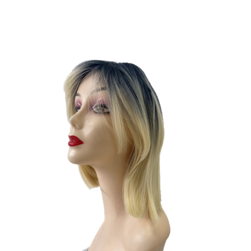
Modelo Carolina
Orgânica · liso · [cm] cm
R$ [valor]
| Página | Campo | Conteúdo |
|---|---|---|
| Capa | Café | Logotipo completo, "Catálogo [mês/ano]", tagline "Beleza que gera confiança" |
| Como escolher | Creme | Material, comprimento, gramas e tom em uma página (o carrossel 14.4 em versão de papel) |
| Abertura de capítulo | Café | Nome da linha com a palavra à mão e uma frase do que ela resolve |
| Produtos | Leite | Quatro fichas com foto, preço e código |
| Serviços | Creme | Confecção de perucas, próteses, telas de tic tac e fitas, inclusive com o cabelo da cliente |
| Última página | Café | Troca, garantia, envio, formas de pagamento, canais oficiais e identificação da loja (pendências 3 a 6) |
Comprimento e gramas: a tabela de referência
A pergunta mais comum no WhatsApp é "quantas gramas eu preciso?". A resposta depende do cabelo da cliente, mas uma tabela de partida ajuda a conversa. Os valores abaixo são uma referência de mercado para mega hair de volume médio e precisam ser conferidos e assinados pela loja antes de publicar.
| Comprimento (fio esticado) | Altura aproximada | Volume leve | Volume cheio |
|---|---|---|---|
| 40 cm | Ombro | 50 g | 100 g |
| 50 cm | Abaixo do ombro | 100 g | 150 g |
| 60 cm | Meio das costas | 100 g | 200 g |
| 70 cm | Fim das costas | 150 g | 250 g |
| 80 cm | Cintura | 200 g | 300 g |
Cada 10 cm a mais pede cerca de 50 g a mais
A cartela de tons do cabelo
Fornecedores de cabelo usam códigos de tom parecidos entre si, herdados da numeração internacional: números baixos são escuros, números altos são claros, e letras ou números compostos indicam reflexo e mistura. Esta cartela é a referência do mercado, não a da Minas: cada código precisa ser conferido com a amostra física do fornecedor (pendência 7).
Nas peças, o código do tom sempre vem com o nome em português ("1B, preto natural"). A cliente não precisa decorar código.
O código interno de cada produto
Um código curto identifica o produto no estoque, no catálogo, no WhatsApp e no sistema da loja. Ele também ajuda a cliente a dizer exatamente o que quer ("quero o MC-PE-OR-NATY"). Proposta de padrão, a validar com o sistema de estoque atual:
MC-LINHA-MATERIAL-MODELO ou TOM-CM-G
| Linha | Sigla |
|---|---|
| Mega hair | MH |
| Peruca (wig) | PE |
| Lace (front lace, closure) | LA |
| Prótese capilar | PR |
| Rabo de cavalo | RC |
| Jumbo para tranças | JU |
| Tela de tic tac e fita (confecção) | CF |
| Acessório e pomada | AC |
| Material | Sigla |
|---|---|
| Cabelo humano | HU |
| Orgânico | OR |
| Bio fibra | BF |
| Fibra para tranças | FT |
MC-MH-HU-1B-60-150 mega hair de cabelo humano, tom 1B, 60 cm, 150 g.MC-PE-OR-NATY peruca orgânica, modelo Naty (perucas usam o nome do modelo e dispensam cm e g).MC-RC-BF-27-65-180 rabo de cavalo em bio fibra, tom 27, 65 cm, 180 g.Os nomes dos modelos e o jeito de escrever
As perucas da Minas já têm nome de mulher (Bianca, Luiza, Nilva, Renata, Tati, Vanuza, Vitória, Wilma; Aline, Bete, Bruna, Carolina, Dalva, Fabian, Monique, Mortiça, Naty). É um traço bonito da casa: o produto ganha personalidade e a cliente lembra dele. O nome do modelo é a palavra à mão do título.
Peruca orgânica Naty, cacheada, [cm] cm, tom [código], R$ [valor] à vista. Material antes do nome, ficha completa, preço com condição.
"Peruca Naty 100% natural virgem premium". Orgânico não é cabelo humano, e "virgem" ou "premium" só com documento do fornecedor (lei 4 e pendência 7).
"Perucas Humanas · Renata" no título da página do site, com "Peruca de cabelo humano Renata" na primeira linha da descrição.
Duas páginas para o mesmo modelo, preço diferente em cada canal, ou o mesmo nome usado para duas perucas diferentes.
Da vitrine à sacola
Na loja de Três Corações a marca não está só na tela: está na fachada, na etiqueta presa ao cabelo, na sacola que sai pela porta, no cartão de cuidados que vai junto e na caixa que chega na casa de quem comprou de longe. Cada uma dessas peças repete as mesmas três assinaturas: a cartela, a mecha e a palavra à mão.
Fachada e letreiro: ler de longe, reconhecer de perto
O letreiro é lido por quem passa de carro ou do outro lado da calçada. Ele leva só o essencial: a marca, a cartela e uma linha que diz o que a loja vende. Telefone, @ e horário ficam na porta, na altura dos olhos. As medidas da fachada são a pendência 12.
Três Corações · MG
Mega hair, perucas, laces e próteses
Letreiro chapado em Café, marca branca e ouro, cartela de verdade (cinco faixas na mesma ordem). Iluminação de dentro para fora, branca e quente (3.000 K), para o dourado não esverdear.
Lona com foto de banco de imagem, cinco frases, telefone gigante, letreiro de LED colorido piscando, "LIQUIDAÇÃO" fixo na fachada ou a marca esticada para caber no espaço.
Regra prática de leitura: cada 1 cm de altura de letra rende cerca de 2,5 m de leitura confortável. Confira o código de posturas da prefeitura de Três Corações antes de produzir placa ou toldo.
Vitrine com manequins: uma história por vez
A vitrine mostra poucas peças, bem penteadas, sobre fundo Café ou Creme. Três manequins no máximo, de alturas diferentes, com uma placa pequena que diz o nome do modelo, o tipo de cabelo e o comprimento.
| Item | Regra |
|---|---|
| Fundo | Painel Café ou Creme liso. Nada de papel de parede estampado atrás do cabelo. |
| Luz | Branca e quente, sem lâmpada colorida: a cliente vê o tom real. |
| Placa | Cartão Creme 10 × 7 cm: nome do modelo à mão, tipo, cm e preço quando houver. |
| Troca | A cada 15 dias ou a cada data do calendário (seção 14). |
Etiqueta de produto, 50 × 75 mm
A etiqueta vai presa a todo cabelo, peruca e lace do estoque. Ela é a ficha de produto em miniatura e segue a lei IV: material com o nome certo, comprimento em centímetros, peso em gramas e o tom.
Cabelo humano
Liso · tic tac
- Comprimento
- 60 cm
- Peso
- 100 g
- Tom
- Castanho 4
- Código
- MC-[000]
R$ [valor]à vista · em até [n]x de R$ [valor]
Como cuidar
Lave com água fria ou morna, sem esfregar. Seque à sombra. Penteie das pontas para a raiz.
com carinho
@minascabelos · Três Corações
- Material primeiro, sempre. "Cabelo humano", "Cabelo orgânico", "Bio fibra" ou "Fibra para tranças", em rótulo Montserrat 700 caixa alta.
- Tom com nome e número. Use a numeração do fornecedor quando houver (1, 2, 4, 27, 613) e o nome em português ("Castanho escuro").
- Preço com a condição inteira. À vista e parcelado com número de parcelas e valor (Decreto 5.903/2006). Sem preço confirmado, a etiqueta sai sem preço, nunca com valor antigo (pendência 6).
- Código igual ao do sistema de estoque, para a etiqueta e o catálogo falarem a mesma língua.
Sacola e caixa de envio
A sacola é o anúncio que anda pela cidade. A caixa é o primeiro contato físico de quem comprou pelo WhatsApp. Nas duas, a marca é grande e o resto é silêncio. Fornecedores e prova de cor são a pendência 13.
Beleza que gera confiança
Três Corações · MG
abra com carinho
Dentro: seu cabelo, o cartão de cuidados e a nota fiscal.
Cabelo dentro de saquinho transparente com a etiqueta visível, papel de seda Creme, cartão de cuidados por cima, nota fiscal no envelope. Fita com a cartela fechando a caixa.
Cabelo solto na caixa, sacola plástica genérica, adesivo com a marca torta, perfume forte no pacote (o cabelo absorve) ou o endereço da cliente escrito à mão sobre a marca.
Cartão de cuidados, A6 frente e verso
Vai em toda compra, na loja e no envio. É a peça que mais é guardada: fica na gaveta do banheiro por meses. Por isso ela precisa ser clara, curta e bonita. Texto pronto abaixo, ajuste ao tipo de cabelo.
Guia de cuidados
Seu cabelo novo pede carinho
Com estes cuidados ele dura mais e continua com o brilho do dia em que saiu da loja.
Passo a passo
- LavarÁgua fria ou morna, xampu suave, sem esfregar. Duas a três vezes por semana.
- PentearDas pontas para a raiz, com pente de dente largo, segurando na base.
- DormirCabelo seco, preso numa trança frouxa, fronha de cetim.
- ManutençãoVolte em [n] semanas. O prazo certo depende do método de aplicação.
Dúvida? Fale com a loja: WhatsApp [confirmar] · @minascabelos
SEU CABELO NOVO PEDE CARINHO Lavar: água fria ou morna, xampu suave, sem esfregar. Duas a três vezes por semana. Pentear: das pontas para a raiz, com pente de dente largo, segurando na base. Secar: à sombra ou com secador na temperatura morna, nunca no máximo. Dormir: cabelo seco, numa trança frouxa, fronha de cetim. Evitar: cloro e água do mar sem proteção; chapinha acima de [temperatura indicada pelo fornecedor]. Manutenção: volte em [n] semanas. O prazo depende do método de aplicação. Dúvida? WhatsApp da loja [confirmar] · @minascabelos
Cartão de visita, 90 × 50 mm
Frente com a marca e a cartela; verso com os canais oficiais. Papel 300 g fosco. Completa com no mínimo 45 mm de largura.
Régis
Minas Cabelos
WhatsApp (35) [confirmar]
@minascabelos · minascabelos.com.br
[Endereço da loja] · Três Corações · MG
Uniforme, recibo e o bilhete à mão
Três detalhes pequenos que fazem a loja parecer cuidada. O avental identifica quem atende. O recibo leva a marca reduzida. O bilhete escrito à mão é a assinatura mineira da casa.
Régis · atendimento
Feito com carinho em Três Corações
Obrigado pela confiança, [nome da cliente].
| Peça | Regra |
|---|---|
| Avental | Café, símbolo bordado em ouro chapado, nome de quem atende em Montserrat 700. |
| Recibo | Marca reduzida em uma cor, razão social e CNPJ (pendência 3), forma de pagamento, política de troca resumida. |
| Bilhete | Uma frase impressa à mão, o nome da cliente de caneta. Nunca propaganda no bilhete. |
Uma loja que abre de madrugada
O site é a loja de Três Corações aberta para quem mora longe e para quem pesquisa à noite, deitada, pelo celular. Ele precisa fazer três coisas bem: mostrar o cabelo com a cor real, dizer com clareza o material, o comprimento, o peso e o preço, e levar para o WhatsApp quando a cliente quiser conversar. A plataforma e o domínio do site novo são a pendência 16.
Página inicial no computador e no celular
Topo Café com a cartela embaixo, marca branca à esquerda, quatro categorias no menu e os ícones de busca, conta e sacola. Logo abaixo, uma frase com a palavra à mão e uma peruca real recortada. Depois, a vitrine por categoria.
Cabelo humano, orgânico e bio fibra
Cabelo que combina com você
Mega hair, perucas, laces e próteses, com atendimento de quem entende de cabelo. Envio para todo o Brasil.
Ver a vitrinePeruca · cabelo humano
RenataR$ [valor]
Peruca · cabelo humano
LuizaR$ [valor]
Peruca · cabelo orgânico
MoniqueR$ [valor]
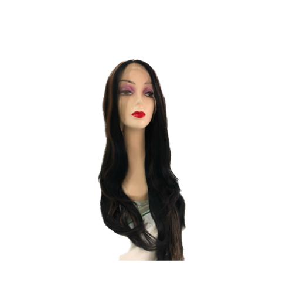
Peruca · cabelo orgânico
MortiçaR$ [valor]
Peruca · cabelo humano
Renata
- Comprimento
- [cm]
- Textura
- Liso
- Tom
- [tom]
R$ [valor]à vista · ou [n]x de R$ [valor]
Vitrine por categoria e cartão de produto
A vitrine se organiza pelo que a cliente procura, não pelo que o estoque tem. O cartão de produto mostra sempre a mesma ordem de informação, igual à etiqueta da loja (seção 17).
| Categoria | O que entra |
|---|---|
| Mega hair | Cabelo humano, orgânico e bio fibra, por método: queratina, fita adesiva, tic tac. |
| Perucas | Humanas e orgânicas, com o nome do modelo (Bianca, Renata, Naty). |
| Laces | Front lace, top closure, lace natural e orgânica. |
| Próteses | Masculinas e femininas, sob medida. |
| Tranças | Jumbos, rabos de cavalo e complementos. |
| Acessórios | Pomadas, colas, removedores, toucas (pendência 17). |
Monique
- Comprimento
- [cm]
- Textura
- [liso, ondulado, cacheado]
- Tom
- [nome e número]
- Fixação
- [lace, touca, tela]
- Peso
- [g]
R$ [valor]à vista no Pix · ou [n]x de R$ [valor] no cartão, total R$ [valor]
ComprarPágina de produto: galeria, ficha, opções e botões
A primeira foto é sempre o produto inteiro sobre fundo claro, sem filtro. Depois vêm detalhe da textura, a lace ou a tela por dentro e, quando houver autorização, a peça em uso por uma cliente real.
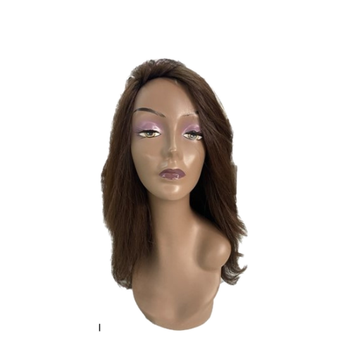
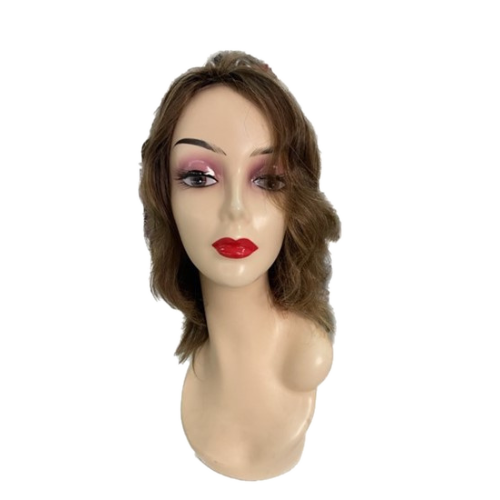
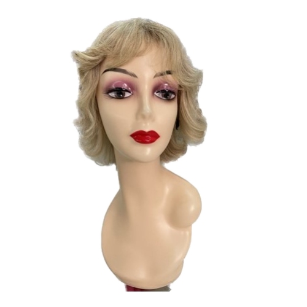
Peruca Renata
Cabelo humano liso. Pode ser cortada e escovada como o seu cabelo. [Tipo de fixação do modelo: lace, touca ou tela.] [Uma frase sobre para quem ela fica bem.]
ComprimentoComprimentos de exemplo: use os do estoque real.
R$ [valor]à vista no Pix · ou [n]x de R$ [valor] no cartão, total R$ [valor]
- Envio: prazo e valor calculados pelo CEP antes do pagamento.
- Troca: 7 dias para desistir da compra feita pelo site (Código de Defesa do Consumidor, art. 49). As condições para peça usada, cortada ou sob medida estão na página de trocas (pendência 5).
Botão principal "Comprar" chapado (Café no claro, Ouro no café), secundário "Tirar dúvida no WhatsApp" em linha. Preço à vista e parcelado com o total. Frete visível antes de fechar o pedido.
Botão com degradê dourado, cronômetro de "oferta acaba em", "só restam 2" sem estoque real, preço só no parcelado ou "consulte o valor" em produto com preço definido.
Carrinho e finalização: nada de surpresa no fim
O Decreto 7.962/2013 pede um resumo do pedido antes da confirmação, com preço total, frete, forma de pagamento e as condições. A cliente confirma sabendo de tudo.
| Peruca Renata · 55 cm | R$ [valor] |
| Envio para [CEP] | R$ [valor] · [n] dias úteis |
| Pagamento | Pix à vista ou cartão em [n]x |
| Total | R$ [valor] |
Ao confirmar, você recebe por e-mail o resumo do pedido e a política de troca.
- Mensagem de pedido confirmado com a palavra à mão: "Seu pedido está a caminho".
- Sem cadastro obrigatório para comprar: pedir só nome, contato e endereço de entrega.
- Aviso de privacidade curto no formulário, com link para a política completa (LGPD).
- Carrinho abandonado: no máximo uma mensagem de lembrete, sem desconto inventado.
Rodapé com identificação obrigatória e canais oficiais
Todo site que vende precisa mostrar nome empresarial, CNPJ, endereço e meios de contato (Decreto 7.962/2013, art. 2º). Até a confirmação dos dados, eles ficam em [confirmar] (pendências 3 e 4).
Beleza que gera confiança
Loja
- Mega hair
- Perucas
- Laces
- Próteses
- Acessórios
Ajuda
- Trocas e devoluções
- Prazos de envio
- Como cuidar do seu cabelo
- Política de privacidade
Canais oficiais
- WhatsApp (35) [confirmar]
- [e-mail oficial]
- @minascabelos
- [Endereço] · Três Corações · MG
- [Horário de atendimento]
Imagem de compartilhamento, 1200 × 630
É a imagem que aparece quando alguém manda o link do site no WhatsApp. Marca grande, uma frase, a cartela. Ela vai no código da página como og:image.
Beleza que gera confiança
Três Corações · MG · envio para todo o Brasil
assets/minas-cabelos-compartilhamento-1200x630.png.Ser encontrada por quem procura perto
Quem busca "mega hair em Três Corações" ou "peruca em Varginha" quer uma loja perto. O básico de busca local cabe em cinco cuidados.
- Título da página inicial: "Minas Cabelos · Mega hair, perucas e laces em Três Corações (MG)". Corrige o "Minas Cabelo" do título atual (pendência 2).
- Descrição: uma frase com o que vende, a cidade e o envio: "Cabelo humano, orgânico e bio fibra, perucas, laces e próteses. Loja em Três Corações e envio para todo o Brasil."
- Perfil da Empresa no Google com o mesmo nome, endereço e telefone do site, fotos reais da loja e o horário (pendência 3).
- Uma página por categoria com texto próprio (mega hair, perucas, laces, próteses) e o nome da cidade e da região, sem repetir palavra-chave à força.
- Texto alternativo em toda foto: "Peruca de cabelo humano liso, 55 cm, tom castanho".
Cabelo humano, orgânico e bio fibra, perucas, laces e próteses. Loja em Três Corações e envio para todo o Brasil.
Quem indica, assina
A Minas Cabelos já tem embaixadoras: clientes que usam o cabelo da loja e mostram no próprio perfil. Elas são a prova mais forte que a marca pode ter, porque são gente de verdade. Por isso mesmo, a parceria precisa ser clara para quem vê: quando há presente, desconto ou pagamento, o post diz que é parceria. O nome, as regras e os benefícios do programa são a pendência 9.
O que é uma embaixadora da Minas
É uma cliente que gosta do cabelo que comprou, aceita mostrar a experiência no próprio perfil e recebe algo da loja por isso (produto, manutenção, desconto ou comissão). Ela não é funcionária e não fala pela loja: fala por ela.
Cliente de verdade
Quem já comprou e usa o produto. Nunca alguém contratado só para posar com um cabelo que não usa.
A própria experiência
Como ficou, como cuida, quanto tempo durou. Sem prometer resultado para quem assiste.
Com parceria identificada
Selo "parceria Minas Cabelos" na arte e #publi ou "parceria paga" na legenda, sempre que recebeu algo.
Publicidade identificada: o que o CONAR pede
O Guia de Publicidade por Influenciadores Digitais do CONAR (2021) diz que todo conteúdo feito em troca de algo, mesmo um presente, precisa ser identificado como publicidade de forma clara, logo no início, sem depender de clicar em "mais". O Código de Defesa do Consumidor (art. 36) diz o mesmo: o público tem que saber que é anúncio.
| Situação | Como identificar |
|---|---|
| Recebeu o cabelo ou a manutenção de presente | "Recebi da @minascabelos" no começo da legenda e o selo de parceria na arte. |
| Recebe comissão ou pagamento | #publi ou "parceria paga com @minascabelos" no começo, e a marcação de parceria paga do Instagram ligada. |
| Tem cupom ou código próprio | Diz que ganha com o uso do código: "Com o meu código, você ganha [benefício] e eu ganho [benefício]". |
| Comprou com o próprio dinheiro e quis mostrar | Não é publicidade. A loja pode repostar com autorização, sem editar o que ela disse. |
"Recebi da @minascabelos e estou usando há [n] semanas. Conto aqui como cuido. #publi"
Esconder o #publi no meio das hashtags, apagar a marcação de parceria, "não é publi, eu amo mesmo" quando recebeu o produto, ou prometer "fica perfeito em qualquer pessoa".
Modelo de post e de story da embaixadora
A arte é dela, com a foto dela. A Minas entra com o selo de parceria e a cartela fina na borda, para a peça ser reconhecida como da família sem parecer anúncio da loja.
Parceria Minas Cabelos
[N] semanas com meu mega hair
Como eu lavo, penteio e durmo. Salve para consultar depois.
@[embaixadora] · recebi da @minascabelos · #publi
Parceria Minas Cabelos
Meu código Minas
Com ele você ganha [benefício] na sua primeira compra.
[NOME10]válido até [data]#publi · eu ganho [benefício] quando você usa
Kit de boas-vindas e código identificado
A embaixadora nova recebe um kit que já ensina o padrão da casa. Tudo nele é pensado para ela mostrar sem precisar de explicação.
Termo de autorização de imagem
Foto de cliente é dado pessoal (LGPD, Lei 13.709/2018) e a imagem é protegida pelo Código Civil (art. 20). A loja só reposta, usa em anúncio ou no site com autorização por escrito, para a finalidade dita, e retira quando a pessoa pedir. Modelo de texto curto abaixo; a versão final é da loja, com revisão jurídica (pendência 8).
AUTORIZAÇÃO DE USO DE IMAGEM Eu, [nome completo], autorizo a Minas Cabelos ([razão social], CNPJ [confirmar]) a usar fotos e vídeos em que apareço usando produtos da loja, enviados por mim ou feitos na loja em [data]. Onde: Instagram, Facebook, TikTok, WhatsApp, site e anúncios da Minas Cabelos. Por quanto tempo: [prazo], podendo ser renovado. Sem pagamento, ou com [benefício combinado]. Posso pedir a retirada a qualquer momento pelo WhatsApp da loja. Publicações novas param na hora; as antigas são apagadas em até [n] dias. Assinatura: ______________________ Data: ___/___/_____
Profissionais parceiras: cabeleireiras e trancistas
Muitas clientes da Minas são profissionais que compram para aplicar. Quando elas mostram o trabalho, a loja aparece como fornecedora, sem tomar o lugar da profissional. Quem aplica e onde é a pendência 14.
| No material dela | Como a Minas aparece |
|---|---|
| Post de trabalho | Marcação "@minascabelos" na legenda ou na foto, com o material: "cabelo humano da @minascabelos, 60 cm, 150 g". |
| Cartão ou tabela de preço dela | Nenhuma marca da loja. A profissional tem identidade própria. |
| Indicação paga ou desconto de parceira | Identificada como parceria (19.2), igual à embaixadora. |
| Repost na Minas | Crédito para a profissional no início: "Aplicação: @[profissional]". A loja não diz que aplicou se não aplicou. |
"Aplicação linda da @[profissional] com 300 g de cabelo humano da Minas, em cápsulas de queratina."
Usar o logotipo da Minas na arte da profissional sem combinar, recolorir a marca para combinar com o perfil dela ou dizer "a Minas fez" em trabalho de outra pessoa.
Vaga de emprego no padrão da casa
O post de vaga de julho de 2026 já tinha a cartela, o Café e o ouro. A versão do sistema mantém tudo isso e muda três coisas: o botão fica chapado (sem degradê), o cabelo de imagem gerada por computador sai (quando houver a sessão de fotos, entra uma foto real da loja, pendência 10) e o texto fica mais curto.
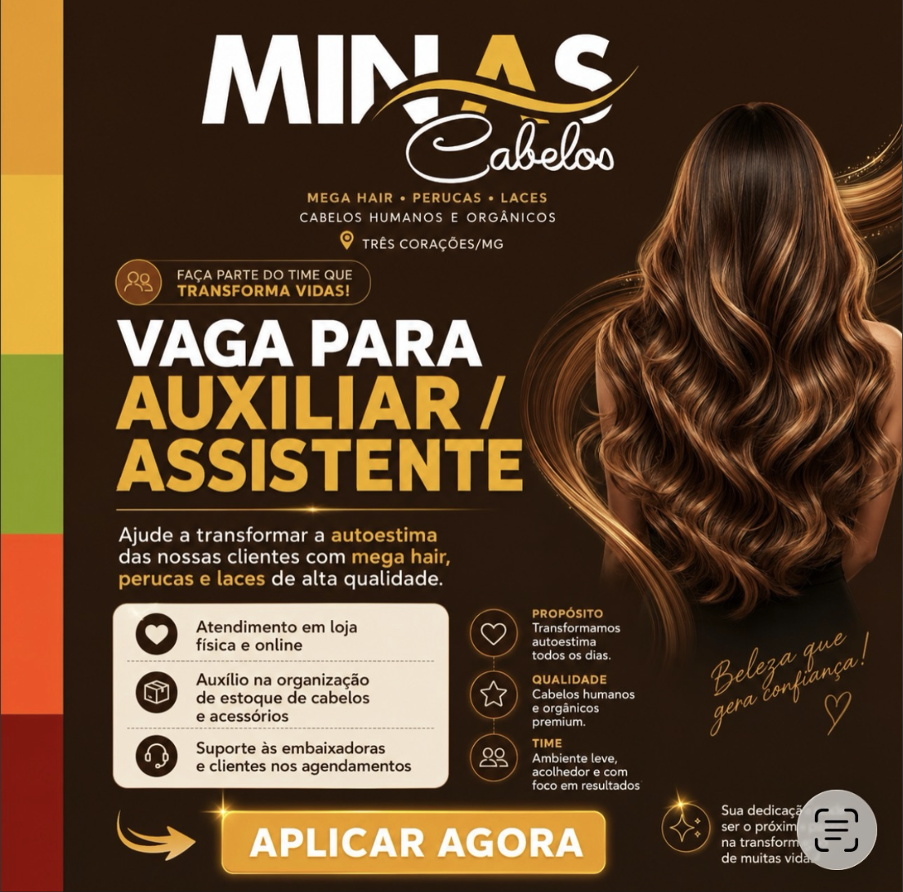
Estamos contratando
Vaga de auxiliar de loja
Ajude a transformar a autoestima das nossas clientes com mega hair, perucas e laces.
- Atendimentona loja e pelo WhatsApp
- Estoqueorganização de cabelos e acessórios
Doze colunas e tudo cabe no celular
Quase toda cliente da Minas vê a loja pelo celular: no Instagram, no WhatsApp, no link do site. Por isso a régua é simples: grade de doze colunas no computador, uma coluna no celular, e nada pode ficar cortado entre 320 e 430 pixels de largura.
A grade de doze colunas
Conteúdo com no máximo 1200 px de largura, texto corrido com no máximo 680 px (cerca de 70 letras por linha). A cartela ocupa a borda esquerda da página e o conteúdo começa depois dela.
| Medida | Computador | Tablet (até 1024) | Celular (até 640) |
|---|---|---|---|
| Colunas | 12, intervalo de 32 px | 6 | 1 (2 em ícones e miniaturas) |
| Margem lateral | 48 px + a cartela de 10 px | 32 px + cartela de 8 px | 20 px + cartela de 6 px |
| Texto corrido | 17 px, linha de 680 px | 17 px | 16 px, largura total |
| Título de seção | até 58 px | cerca de 44 px | 34 px (31 px abaixo de 380) |
| Botão | altura mínima 48 px | 48 px | 48 px, largura total |
O Mobile System, de 320 a 430 px
Vale para este manual, para o site, para landing page, catálogo em HTML e qualquer página feita com a skill.
- Grades empilham. Duas, três ou quatro colunas viram uma no celular; cartões de produto podem ficar em duas.
- Tabelas de consulta viram cartões. Cada linha vira um cartão com o primeiro dado como título. O script do fim do manual faz isso sozinho (
data-minas-responsive="v1", copie literal). - Tabela larga de verdade (matriz de tons ou de preços) mantém as colunas, com rolagem lateral visível e o aviso "Deslize para ver a tabela inteira".
- Imagem nunca passa da tela:
max-width:100%em toda mídia. - Texto quebra com segurança: link, e-mail e código quebram em qualquer ponto; nada empurra a página para o lado.
- Botão longo quebra linha ou ocupa a largura disponível. Nunca some texto do botão.
- Proibido esconder o estouro com
overflow-x:hiddennohtmlou nobody: se algo vaza, conserte o que vaza.
A peça vista no feed
No celular, o post de 1080 px aparece com cerca de 390 px de largura, ou seja, a 36% do tamanho. Por isso nenhum texto da arte fica abaixo de 26 px: no feed, ele chega a uns 9 px, o limite da leitura.
Título com até 6 palavras, uma informação por peça, preço e detalhes na legenda. Teste: reduza a arte para 36% e leia no celular, com o braço esticado.
Arte com parágrafo, tabela de preços inteira, letra cursiva pequena, cinco ícones com texto miúdo. No feed vira uma mancha.
Ritmo vertical e respiro
Todo espaço sai de 4, 8, 12, 16, 24, 32, 48, 64, 96 e 128 px. Nada de 13, 19 ou 27.
128 px entre seções no computador, 96 no tablet, 64 no celular. Entre blocos, 96 e 64.
Margem de 72 px nas bordas, 128 px à esquerda (a cartela tem 56). Story e reels: 250 px livres no topo e na base.
Do Canva ao PDF sem perder o tom
A loja produz no celular, no Canva e no editor de vídeo. Esta seção mostra como levar a Cartela Mineira para essas ferramentas sem que a cor, a letra ou a marca se percam no caminho.
Canva: o kit da marca
Monte uma vez o "Kit de marca" do Canva e todo modelo novo já nasce certo.
- Logotipos: envie os PNG de
assets/(completa branca, completa café, reduzida, símbolo ouro). Nunca redigite "MINAS" com a fonte do Canva. - Cores: cadastre na ordem Café
#28170C, Café Minas#33150A, Ouro#F0B800, Creme#F1E4D1, Leite#FBF6EE, e a cartela: Mel#DD9A37, Dourado#E9B43E, Mata#8B9D30, Cobre#E85529, Vinho#80170F. - Fontes: Montserrat (título, ExtraBold), Nunito Sans (texto) e Alex Brush (a palavra à mão). As três estão na biblioteca gratuita do Canva; se alguma faltar, envie os arquivos de
assets/fontes/. - Cartela: envie
formas/minas-cabelos-cartela-vertical.svge trave o elemento na borda esquerda de cada modelo (56 px numa arte de 1080). - Modelos-mãe: crie um modelo para cada peça das seções 14 a 19 (post de produto, carrossel, story, catálogo do WhatsApp, vaga, embaixadora) e duplique, nunca comece do zero.
Vídeo: CapCut e reels
| Elemento | Regra |
|---|---|
| Formato | 1080 × 1920, 30 quadros por segundo; o que importa fica nos 1420 px do meio (250 px livres no topo e na base). |
| Abertura | Até 2 segundos: o cabelo já em movimento, em luz natural. Sem vinheta longa. |
| Legenda | Nunito Sans ExtraBold ou Montserrat Bold branca, 1 a 3 palavras por vez, na altura do peito; a palavra-chave em ouro. Sem caixa colorida atrás. |
| Texto fixo | Nome do produto, comprimento e peso no início ("Lace frontal · 60 cm · 180 g"), em Montserrat sobre faixa Café com 80% de opacidade. |
| Cartela | Faixa fina de 28 px na borda esquerda durante o vídeo todo, ou só na capa. |
| Fecho | Último segundo com o símbolo ouro sobre Café e @minascabelos. Sem música alta por cima da fala. |
| Áudio | Música da biblioteca liberada do Instagram ou do CapCut; em anúncio, só música com licença comercial. |
Exportar PDF e imprimir
- Abra o HTML no Chrome e espere uns 3 segundos.
Cmd+P(ouCtrl+P), destino Salvar como PDF.- Em "Mais configurações", ligue Gráficos de segundo plano. Sem isso o café some e o texto branco fica invisível.
- Documento: retrato, margens padrão. Apresentação: paisagem, margens Nenhuma.
- Arquivo em PDF com 3 mm de sangria e as fontes convertidas em curvas.
- Cores de impressão (CMYK e Pantone) só depois da prova da gráfica: o Café e o Ouro mudam muito no papel (pendência 13).
- Ouro em sacola e etiqueta: ouro chapado (
minas-cabelos-completa-ouro-chapado) ou hot stamping; nunca amarelo de quadricromia. - Papel kraft escurece as cores: use a marca café ou branca chapada, nunca a cartela inteira em kraft.
Os arquivos deste pacote
| Arquivo | Para que serve |
|---|---|
brand-book.html | Este manual, com os modelos de peça em tamanho real. O <head> e a <style> são o modelo de documento. |
deck-template.html | O esqueleto de apresentação, 1440 × 900, com dez tipos de slide. |
lockup.html | Snippets prontos: marca, cartela, mecha, identificação da loja, canais oficiais, ficha de produto, assinatura de e-mail. |
mcviz.js · mcforms.js | Os motores de gráficos e de formas da casa. |
assets/ | Marca em SVG e PNG, cartela, desenhos de construção, fotos de produto, fontes e os arquivos originais publicados pela loja. |
dist/ | Versões de arquivo único, com tudo embutido, para mandar por WhatsApp, e-mail ou Drive. |
autocontido.py · exportar_pdf.py | Gera o arquivo único de qualquer HTML novo e exporta PDF automaticamente. |
dist/, ou gere com python3 autocontido.py meu-material.html.O que sai e o que fica
A Cartela Mineira não inventa uma marca nova. Ela organiza o que a Minas já fazia de melhor e tira o que deixava as peças parecidas com as de qualquer loja. Nada muda de uma vez: troque cada peça quando ela for refeita.
Fica, e vira regra
| Elemento | Onde estava | Como fica |
|---|---|---|
| O logotipo MINAS + mecha + Cabelos | Site e Instagram, em arquivos pequenos | Reconstruído em vetor, em seis versões de cor (seção 02) |
| A faixa de cinco cores | Avatar e posts recentes | Vira a cartela: assinatura de toda peça, sempre na mesma ordem |
| O fundo café | Posts de 2026 | Campo principal, #28170C |
| O ouro do A e da mecha | Logotipo | Ouro Minas #F0B800, só marca, botão e destaque sobre café |
| A letra cursiva de "Cabelos" | Logotipo e "Beleza que gera confiança" | A palavra à mão: uma por título |
| O cartão creme com ícones | Post de vaga | Painel Creme #F1E4D1 para informação |
| Montserrat em caixa alta | Títulos dos posts | Títulos de peça, curtos |
| Nomes de mulher nas perucas | Site (Bianca, Luiza, Vitória...) | Vira coleção: nome sempre com tipo e material |
Sai
| Sai | Por quê | No lugar |
|---|---|---|
Laranja #FF4E00 dos botões do site e Open Sans | Vem do modelo pronto do site, não da marca | Botão café ou ouro, Montserrat e Nunito Sans |
| Gradiente dourado e brilhos no texto | Parece promoção e falsifica o ouro da marca | Ouro chapado |
| Imagem de pessoa ou de ambiente gerada por IA | A cliente compra o que vê: a imagem precisa ser real | Foto real da loja, do Régis e do produto (pendência 10) |
| Arte com muito texto e muitos ícones | No feed vira mancha | Uma ideia por peça, detalhe na legenda |
| Emoji dentro da arte | Muda de desenho em cada celular e pesa a peça | Ícone Lucide de traço fino; emoji só na legenda (no máximo dois) |
| "Minas Cabelo", no singular | Divide o nome da loja na busca | Minas Cabelos, sempre (pendência 2) |
| Preço sem data de atualização | Preço desatualizado vira informação errada para a cliente | Tabela revisada com data (pendência 6) |
Ordem da troca
Do que a cliente mais vê para o que ela menos vê.
Primeiro o que aparece todo dia: perfil e WhatsApp
O que ainda depende da Minas
Algumas decisões e informações só a loja pode dar. Até cada uma ser resolvida, o sistema entrega a versão segura: o dado aparece como [confirmar], a marca usa a reconstrução e o termo que depende de documento fica de fora.
As dezessete pendências
A numeração é fixa: todo o manual, a skill e os modelos citam a pendência pelo número.
| Nº | Pendência | O que fica travado | Enquanto isso |
|---|---|---|---|
| 1 | Arquivo original do logotipo (vetor) e nomes das fontes do designer | Fidelidade total do desenho; impressão grande | Usar a reconstrução vetorial com o rótulo quando a peça apresenta a marca |
| 2 | Nome oficial único e o mesmo @ em todas as redes | Busca pelo nome; título do site | Escrever sempre "Minas Cabelos" |
| 3 | Razão social, CNPJ, endereço completo e horário | Rodapé do site, etiqueta, cartão, nota no pedido | Bloco de identificação com [confirmar] |
| 4 | WhatsApp único com conta comercial verificada, telefone e e-mail confirmados | Selo de canais oficiais | Usar o número publicado no site, marcado [confirmar], só em material interno |
| 5 | Política de troca, devolução e garantia por tipo de produto | Página de troca, cartão de cuidados, resposta padrão no WhatsApp | Explicar o direito de arrependimento de 7 dias nas compras à distância (art. 49 do CDC) e encaminhar o resto para a loja |
| 6 | Tabela de preços atualizada e condições de pagamento | Preço em post, catálogo e site | Preço só no orçamento individual; em modelo, R$ [valor] |
| 7 | Documentos dos fornecedores sobre origem e tipo do cabelo | "Virgem", "Remy", "brasileiro", "100% humano" | Usar só o tipo de material da etiqueta do fornecedor |
| 8 | Termo de autorização de imagem | Foto de cliente e de embaixadora em post e anúncio | Produto em manequim; cliente só com autorização por escrito |
| 9 | Programa de embaixadoras: nome, regras e benefício | Kit, cupom, comunicação do programa | Modelos da seção 19 com publicidade identificada |
| 10 | Sessão de fotos real (loja, Régis, produtos em luz natural) | Capa do site, destaques, apresentação da loja | Fotos de manequim do site, recortadas, sem alterar a cor |
| 11 | Depoimentos reais, com nome autorizado | Seção de depoimentos do site e destaques | Não publicar depoimento sem autorização e sem nome confirmado |
| 12 | Medidas e fotos da fachada e da loja | Letreiro, adesivo de vitrine | Regras da seção 17 em proporção |
| 13 | Fornecedores de embalagem e prova de cor da gráfica | CMYK, Pantone, sacola, etiqueta impressa | Imprimir pequena tiragem de teste antes de qualquer lote |
| 14 | Serviço de aplicação: quem aplica, onde e como | Peças sobre aplicação e preço de serviço | Falar de confecção (que a loja faz) e indicar a aplicação como "consulte a loja" |
| 15 | Atendimento a quem passa por tratamento de saúde | Campanhas e parcerias com clínicas | Tom digno da seção 07, atendimento reservado, nada de anúncio sobre doença |
| 16 | Site novo: domínio, plataforma e imagem de compartilhamento | Implementação da seção 18 | Usar a imagem de compartilhamento deste pacote no site atual |
| 17 | Regularização na Anvisa dos cosméticos e pomadas vendidos | Anúncio de pomadas, colas e removedores | Divulgar só o que tiver regularização conferida, sem promessa de efeito |
Como a skill trata uma pendência
Entrega a peça na versão permitida (dado em [confirmar], preço em R$ [valor], sem o termo que depende de documento) e diz, em uma linha, qual pendência trava o resto: "Preço fica em aberto até a tabela nova (pendência 6)".
Inventar endereço, CNPJ, preço, prazo de entrega, origem do cabelo ou nome de cliente para a peça ficar "completa".
Também em aberto, sem número: conferir Montserrat, Nunito Sans e Alex Brush no editor de vídeo da loja, e decidir se a vaga de emprego entra no destaque do Instagram.
Antes de publicar, confira
Doze perguntas, um minuto. Se alguma resposta for "não", a peça volta para o ajuste. Marque aqui mesmo: as marcações ficam salvas só neste navegador.
Checklist de aprovação de peça
O que a Cartela Mineira não é
- Não é salão de luxo genérico: nada de mármore, brilho, coroa, glitter ou ouro em folha.
- Não é clichê de beleza: nada de tesoura, secador, pente ou silhueta de mulher como enfeite.
- Não é liquidação: nada de "QUEIMA", contagem regressiva falsa ou preço riscado sem preço anterior real.
- Não é banco de imagem nem pessoa gerada por IA.
- Não é a marca redesenhada, recolorida, esticada ou digitada.
- Não é a cartela fora de ordem, as cores trocadas por "tons da moda" ou o arco-íris inteiro.
Uma loja de cabelo vende confiança antes de vender fio. Cada peça igual à outra, com a cartela na borda e a palavra à mão no lugar, é a forma visual dessa confiança.